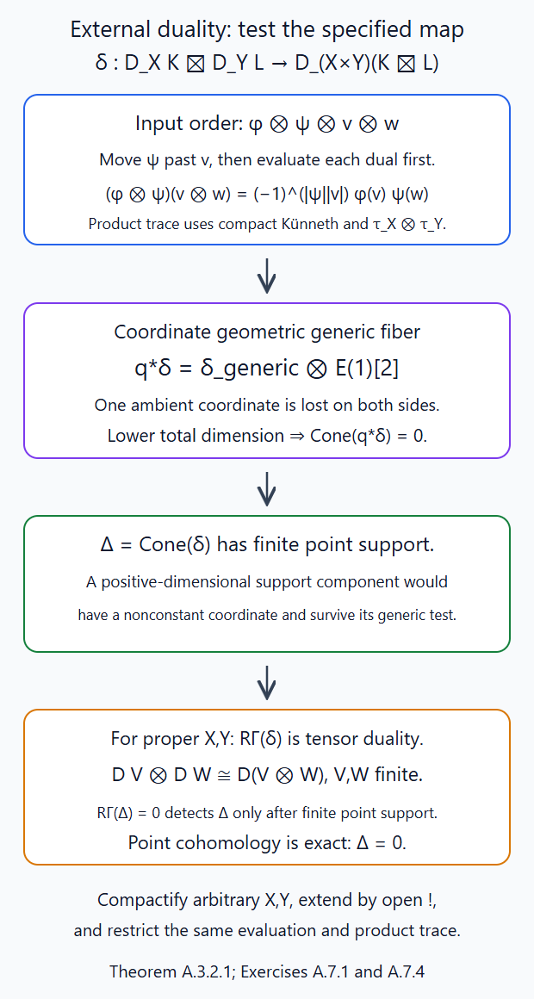
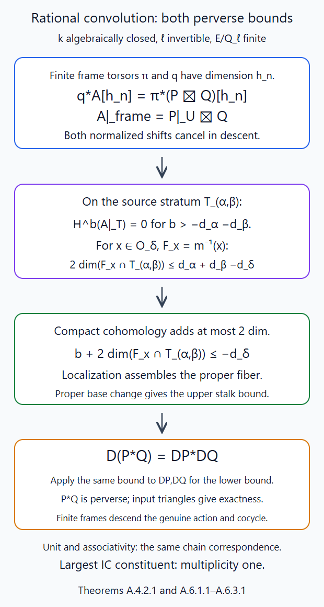
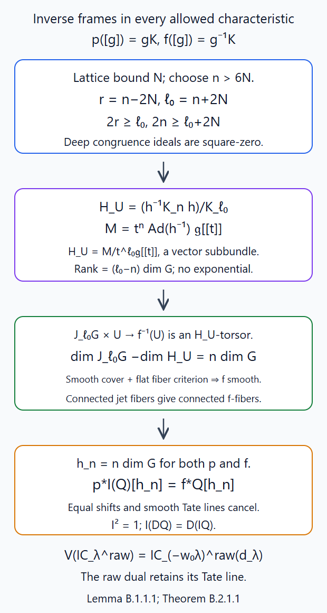
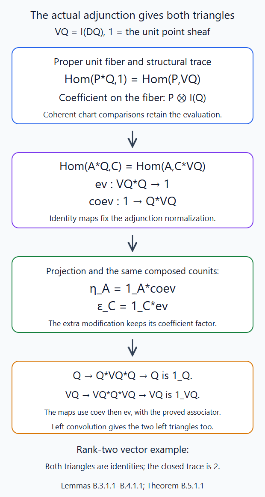
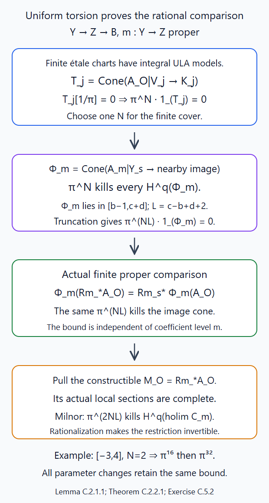
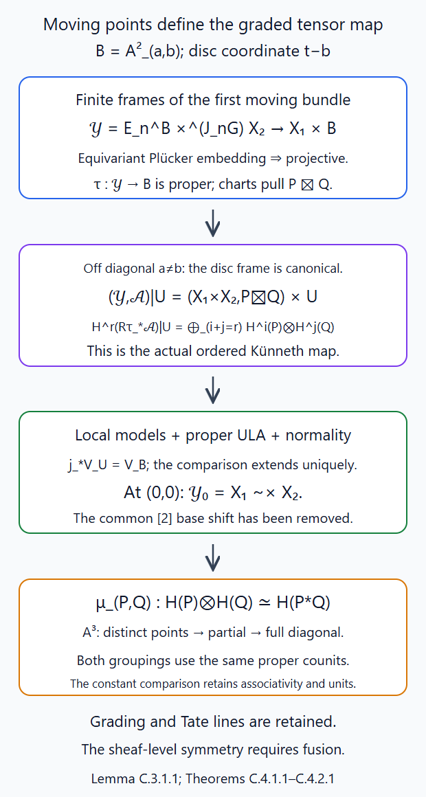

Convolution and rigidity
Written by GPT-6.1 Sol (OpenAI), October 2026. Public domain (CC0).
Convolution composes two modifications of a bundle. The intermediate bundle is part of the correspondence; forgetting it is a proper map. We construct that correspondence on finite schemes, prove the dimension estimate for every source stratum, and use it to prove that convolution preserves the perverse heart. We then construct duals by reversing framed modifications and prove both duality identities. None of these arguments assumes general IC parity or semisimplicity.
Work with a connected reductive group \(G/\mathbb C\) and a characteristic-zero coefficient field \(\Lambda\). Put \(O=\mathbb C[[t]]\), \(F=\mathbb C((t))\), \(K=L^+G\), and \(K_n=\ker(K\to J_nG)\). All sheaves have finite Schubert support. Write \(O_\lambda=\operatorname{Gr}^{\lambda}\), \(Z_\lambda=\overline{O_\lambda}_{\mathrm{red}}\), and \(d_\lambda=\langle2\rho,\lambda\rangle\).
Appendix A proves genuine finite-jet rational convolution over every algebraically closed ground field with \(\ell\) invertible and finite \(E/\mathbf Q_\ell\). It supplies normalized torsor descent, actual external duality and perversity, the all-field fiber bound, exact convolution, unit, associativity and the highest constituent. Appendix B constructs rational frame inversion and proves right and left rigidity with the actual evaluation, coevaluation and both triangles, including the raw IC Tate line. Appendix C constructs the all-field finite-E rational graded tensor-cohomology comparison and proves compatibility with the actual associator and unitors. Section 9 retains its classical argument. Lesson 8, Appendix A constructs the fixed-coordinate rational fusion and component-adjusted symmetry. Lesson 8, Appendix B proves the curve and full-coordinate comparison.
The scheme inputs are Loop groups and the affine Grassmannian, Theorem 7.1 and §§2,4; Beauville–Laszlo gluing and the moduli interpretation, §§1–3,7–8; and Orbits and Schubert varieties, §§2–5. We use the dimension and contraction proofs in Semi-infinite orbits and weight functors, §§7–10. The category, finite jets, duality and exact faithful cohomology are proved in The Satake category, §§1–4,6. The classical base-change, projection, trace and duality maps are constructed in Constructible complexes on algebraic varieties, Appendices F–K. Torsor descent in the heart is Equivariant perverse sheaves and perverse sheaves on stacks, Lemma B.2; product acyclicity is its Lemma B.5.
1. Two endpoints give a bounded scheme
Choose the faithful closed representation \(G\hookrightarrow\operatorname{GL}(V)\) of the loop-group lesson. Let \(X_1,X_2\) be finite closed unions of Schubert varieties, with bounds \[ t^{N_i}V_O\subset L_i\subset t^{-N_i}V_O. \] These inclusions hold over every parameter algebra. A chain of modifications is described locally by \[ [g,y],\qquad gK\in X_1,\quad y\in X_2, \qquad (g,y)\sim(gh^{-1},hy)\ (h\in K). \] Its first and last endpoints are \[ p([g,y])=gK,\qquad m([g,y])=gy. \tag{1.1} \] The relative second lattice satisfies \[ t^{N_2}L_1\subset gL_2\subset t^{-N_2}L_1. \] Consequently its last endpoint has bound \(M=N_1+N_2\), including over nonreduced parameter rings.
Here is a scheme construction of the contraction. Over an étale frame chart \(U\to X_1\), choose the formal frame \(g_U\) of the universal first disc torsor. Such charts and their formal lifts are proved in the loop-group lesson, Lemma 4.1: first trivialize the smooth torsor modulo \(t\), then lift through its square-zero thickenings. In the finite product \(U\times X_M\), impose the closed condition \[ g_U^{-1}z\in X_2. \tag{1.2} \] The inverse frame sends the target bound into bound \(M+N_1\), so (1.2) is the inverse image of an actual closed immersion in a finite stage. Replacing the frame multiplies the relative endpoint by an integral element. Since \(X_2\) is \(K\)-stable, the closed ideals agree on overlaps. Faithfully flat ideal descent from the gluing lesson constructs \[ Y=X_1\widetilde\times X_2\hookrightarrow X_1\times X_M. \tag{1.3} \] This is a closed immersion on the full parameter functors, not merely an injection on complex points. Thus \(Y\) is projective and \(m\) is proper.
The endpoint description explains uniqueness. For any two endpoints, choose a formal frame of the first torsor and apply its inverse to the second endpoint. Another frame changes the relative endpoint by precisely the contraction relation above. This gives inverse maps between the full twisted product and the two-endpoint functor. Condition (1.2) cuts out its relative-support subfunctor.
For finite descent, take \(n\ge\max(1,2N_2)\). The all-ring calculation of Lesson 6, §1, makes \(K_n\) act trivially on \(X_2\). Let \(E_n\to X_1\) be the torsor of frames of the universal disc torsor modulo \(t^n\). Its étale charts are \(U\times J_nG\), so it is a finite-type smooth torsor. Its dimension over \(X_1\) is \[ e_n=\dim J_nG=n\dim G. \] Truncated frames lift formally on affine charts, and two lifts differ by \(K_n\). Therefore \[ Y=E_n\times^{J_nG}X_2, \qquad q:E_n\times X_2\longrightarrow Y \tag{1.4} \] is a smooth torsor of relative dimension \(e_n\). Increasing the frame level gives the same associated scheme: this is the identity in every formal frame chart, hence descends.
2. The twisted external product and its shifts
Over a field, \(P\boxtimes Q\) is perverse when \(P,Q\) are perverse. We recall the proof needed here. Tensor product is exact on stalk vector spaces, and \[ \mathcal H^k(P\boxtimes Q) =\bigoplus_{a+b=k}\mathcal H^a(P)\boxtimes\mathcal H^b(Q). \] The support dimension of each term is at most \(-a-b=-k\). This proves the upper perverse bound. Proper-support base change and projection formula give compact-support Künneth on product neighbourhoods: first integrate along one projection, then along the other. The finite-dimensional local pairing with the dualizing complexes consequently gives \(D(P\boxtimes Q)=DP\boxtimes DQ\). The same upper bound for \(DP,DQ\) proves the lower bound. These are the explicit maps of the constructible-complexes lesson, H.1–H.6 and J.
Let \(P,Q\) be Satake-heart objects on \(X_1,X_2\), and let \(\pi:E_n\times X_2\to X_1\times X_2\). The complex \[ \pi^*(P\boxtimes Q)[e_n] \] is perverse. Equivariance of \(Q\) supplies its descent for the contraction action. Torsor descent, Lemma B.2, gives a unique perverse object \(P\widetilde\boxtimes Q\) with \[ q^*(P\widetilde\boxtimes Q)[e_n] \simeq\pi^*(P\boxtimes Q)[e_n]. \tag{2.1} \] The two shifts cancel. In a formal frame chart the descended complex is \(P|_U\boxtimes Q\), with no extra shift. A higher frame level pulls back both sides of (2.1); connected-fibre full faithfulness and the normalized descent identify them canonically. Closed enlargement of either support extends the corresponding twisted sheaf by zero.
Smooth duality applied to the equally normalized pullbacks in (2.1) gives \[ D(P\widetilde\boxtimes Q) \simeq DP\widetilde\boxtimes DQ. \tag{2.2} \] Define the derived convolution by \[ P*Q=Rm_*(P\widetilde\boxtimes Q). \tag{2.3} \] We next prove that this is in the heart.
3. The image of each source-stratum closure
The source strata are \[ T_{\alpha,\beta}=O_\alpha\widetilde\times O_\beta. \] They are smooth and irreducible, of dimension \(d_\alpha+d_\beta\). Indeed on the finite frame torsor they are products of the two smooth irreducible orbits. Their reduced closures are \[ Y_{\alpha,\beta}=Z_\alpha\widetilde\times Z_\beta. \] The latter is reduced and irreducible after the same smooth faithfully flat pullback, and its indicated open stratum is dense. The closure contains exactly the strata with \(\gamma\le\alpha\) and \(\eta\le\beta\). These finitely many closure relations give a closed filtration by any order placing smaller pairs first.
We prove \[ m(Y_{\alpha,\beta})=Z_{\alpha+\beta}. \tag{3.1} \] Use the actual representations constructed in the orbit lesson's upper-bound proof, equation (3.8). Their largest weights are \(\chi_i=c_i\omega_i\), with \(c_i>0\). If \(gK\in Z_\alpha\), that proof gives \[ \rho_i(g^{-1})V_{i,O} \subset t^{-\langle\chi_i,\alpha\rangle}V_{i,O}. \] Compose this bound with the one for \(hK\in Z_\beta\). Since \((gh)^{-1}=h^{-1}g^{-1}\), an endpoint of dominant type \(\delta\) satisfies \[ \langle\chi_i,\delta\rangle \le\langle\chi_i,\alpha+\beta\rangle\quad\text{for every }i. \] The orbit lesson, §5, constructs the loop-group homomorphism \(\kappa\), proves \(\kappa(K)=0\), and proves additivity by multiplying its torus-kernel lifts. Hence \(\alpha+\beta-\delta\in\mathbb Z\Phi^\vee\). Write it as \(\sum_i a_i\alpha_i^\vee\). The displayed inequalities say \(c_i a_i\ge0\), so all integral \(a_i\ge0\). Thus \(\delta\le\alpha+\beta\).
This proves the upper containment on complex points. Reducedness makes the morphism factor through the reduced closed target: a pulled-back defining function vanishes at every closed point and is zero on a reduced finite-type complex scheme. Conversely \([t^\alpha,t^\beta]\) maps to \(t^{\alpha+\beta}\). The image of the projective source is closed and \(K\)-stable; it contains that orbit and its closure. This proves (3.1). In particular its image dimension is \(d_\alpha+d_\beta\).
4. The fibre estimate on every stratum
Fix an endpoint in \(O_{\nu^+}\). Equivariance lets us represent it by \(t^\nu\), with \(\nu\) antidominant. Then \(d_{\nu^+}=-\langle2\rho,\nu\rangle\). The closed fibre in \(Y_{\alpha,\beta}\) is \[ F_\nu=m^{-1}(t^\nu)\cap Y_{\alpha,\beta}. \] The endpoint immersion (1.3) identifies its reduced space with a closed \(T\)-stable subset of \(Z_\alpha\).
Partition it by the finitely many semi-infinite strata \(S_\phi\) meeting \(Z_\alpha\). The explicit dominant-cocharacter contraction of the weight-functor lesson, equation (7.1), implies \[ F_\nu\cap S_\phi\ne\varnothing\quad\Longrightarrow\quad t^\phi\in F_\nu. \] Closedness and torus stability keep the contraction inside the fibre. At this fixed point the second relative modification is \(t^{\nu-\phi}\in Z_\beta\). Its semi-infinite dimension is nonnegative, so \[ \langle\rho,\beta+\nu-\phi\rangle\ge0. \] The proved dimension theorem also gives \[ \dim(F_\nu\cap S_\phi) \le\langle\rho,\alpha+\phi\rangle \le\langle\rho,\alpha+\beta+\nu\rangle. \] Take the maximum over the finite partition. We obtain \[ 2\dim F_\nu \le d_\alpha+d_\beta-d_{\nu^+}. \tag{4.1} \] Every dimension here is the dimension of the reduced fibre. The same inequality bounds its intersection with the open source stratum. It holds for every pair \((\alpha,\beta)\), including boundary strata; no dual-group interpretation of the indices is used.
Over each target orbit, the smooth finite-jet orbit map admits étale local sections. Such a section \(\sigma\) identifies the inverse image with the product of the orbit chart and its fibre, by \((x,z)\mapsto\sigma(x)z\); its inverse uses \(\sigma(x)^{-1}\). It preserves all source strata. Thus (4.1), together with the proper source-stratum closures and (3.1), is stratified semismallness. If Whitney strata are required, they are the orbit strata themselves: generic Whitney regularity is proved in the constructible-complexes lesson, K.5; its bad set for an incident pair is invariant under the transitive finite-jet action on the lower orbit, so one good point makes every point good. On source frame charts the stratification is a product of these orbit stratifications. Product and analytic étale coordinates preserve the tangent and secant conditions.
5. Convolution is perverse and exact
Put \(A=P\widetilde\boxtimes Q\). On \(T_{\alpha,\beta}\), local frame charts and the orbit bounds for \(P,Q\) give locally constant cohomology only in degrees \[ b\le-d_\alpha-d_\beta. \] At \(x\in O_\delta\), intersect the fibre with each source stratum. Each piece has compact-support cohomological dimension at most twice its dimension, by the proved bound of the constructible-complexes lesson, F.1–F.2. Ordinary truncation triangles therefore put its total compact cohomology in degrees at most \[ 2\dim(F_x\cap T_{\alpha,\beta})-d_\alpha-d_\beta \le-d_\delta. \tag{5.1} \] Use compact cohomology on these pieces, which need not be proper. Intersect the finite closed source filtration with the whole fibre and apply compact-support localization successively. It preserves (5.1). The whole fibre is proper, so only at this last step does compact cohomology equal ordinary cohomology. Proper base change proves the upper perverse bound for \(Rm_*A\).
Apply exactly the same argument to \(DP,DQ\). Equations (2.2) and proper duality give \[ D(P*Q)=DP*DQ. \tag{5.2} \] Their upper bound is the lower perverse bound for \(P*Q\). Thus convolution is perverse.
It is spherical. The left integral action on the first frame commutes with the right contraction action. This construction is finite: a level \(\ell\ge n+2N_1\) acts trivially on the truncated first frame, since conjugating a matrix congruence by its frame loses at most \(2N_1\) powers of \(t\). Enlarge \(\ell\) to fix the endpoint bound too. The action therefore descends at finite jet level through (2.1), and proper base change gives its normalized action on the pushforward.
External tensor product over the field, descent, and proper derived image preserve triangles. Since the convolution of every pair of heart objects is in the heart, a short exact sequence in either argument gives a short exact convolution sequence by its heart long exact sequence. Convolution is exact in each variable. Enlarging supports or jet levels gives the canonical same object, as in §2.
6. Unit, associativity, and the highest constituent
The unit is \(\mathbf1=IC_0=\delta_K\), in degree zero. With either relative modification fixed at the base point, the relevant correspondence is the identity correspondence on the other support. Its descended sheaf is that other object, with no added shift. Hence \(\mathbf1*P=P=P*\mathbf1\), with the natural identifications.
For associativity take chains of three modifications. The successive lattice bounds are \(N_1,N_1+N_2,N_1+N_2+N_3\). Impose the relative-position closed conditions by the same frame-chart ideal descent as in (1.2). This is a projective correspondence. Descend the threefold external product on a common finite frame cover. Proper base change and projection formula identify both parenthesizations with its proper image under the last-endpoint map: on a frame chart this is just integration first in one factor and then in the other, and the composition isomorphism identifies it with integration in both. The descent maps agree on overlaps by their normalized uniqueness. The four-modification correspondence proves the pentagon, since both composites pull back to the same external-product associativity map. The identity correspondences likewise prove the unit triangles. We have constructed an exact monoidal heart.
There is one unconditional multiplicity assertion even while general semisimplicity remains unproved. The simple \(IC_{\alpha+\beta}\) occurs exactly once as a composition factor of \(IC_\alpha*IC_\beta\). Indeed (4.1) makes its fibre over the largest orbit zero dimensional. It is a finite closed torus-stable set, so every point is fixed and has first endpoint \(t^\phi\). Its two nonnegative height quantities sum to zero: \[ \rho(\alpha+\phi)+\rho(\beta+\nu-\phi)=0, \qquad\nu=w_0(\alpha+\beta). \] Each is therefore zero. If the dominant representative of \(\phi\) is \(\gamma\le\alpha\), then \(\rho(\alpha+\phi)\ge\rho(\alpha-\gamma)\ge0\). Equality forces \(\gamma=\alpha\) and \(\phi=w_0\alpha\). For the second assertion, reflect a Weyl-orbit point with positive simple-root pairing: reflection decreases its \(\rho\)-value by that positive pairing. The unique minimum is the antidominant point. The second relative endpoint is similarly \(t^{w_0\beta}\). The two-endpoint immersion makes this a unique fibre point, and it lies in the open source stratum. Thus the convolution restricts to the constant rank-one system shifted by \(d_{\alpha+\beta}\). Open restriction is exact on the perverse heart; all lower-support simples restrict to zero. Its rank-one restriction consequently gives exactly one largest simple constituent. This argument alone does not assert a direct-summand splitting.
7. Inversion on finite frames
Inversion of a right coset is a left coset. We construct the required operation using frames, where inversion is an actual morphism.
Let \(X_N\) be an inversion-stable bounded lattice stage, and take \(n>2N+1\). The inverse of a matrix whose lattice has bound \(N\) has the same bound: apply its inverse to the two lattice inclusions. Let \[ E_n=(LG|_{X_N})/K_n,\qquad p:E_n\to X_N. \] There is a second map \[ f:E_n\to X_N,\qquad[g]\mapsto g^{-1}K. \tag{7.1} \] If \(g\) is replaced by \(ga\), \(a\in K_n\), its inverse endpoint is multiplied on the left by \(a^{-1}\). This congruence group fixes the whole bounded stage, so (7.1) is well-defined over every parameter algebra. Frame-chart descent makes it a scheme morphism.
We prove that both \(p,f\) are smooth with connected fibres of dimension \(e_n=n\dim G\). This is already known for \(p\). On an étale target frame chart choose \(h\), set \(\ell=n+2N\), and write \[ f^{-1}(U)=K/(h^{-1}K_nh)=J_\ell G/H, \qquad H=(h^{-1}K_nh)/K_\ell. \tag{7.2} \] Indeed an inverse endpoint \(hK\) has a frame \(a h^{-1}\), \(a\in K\), and changing the original right frame is the displayed conjugate subgroup. Matrix bounds give \[ K_\ell\subset h^{-1}K_nh\subset K_1. \] All formulas here are relative to \(U\).
Here is an all-base polynomial exponential calculation. For \(1\le a<r\), Lemma 1.1 of Lesson 6 makes \(U_{a,r}=K_a/K_r\) smooth and connected, of dimension \((r-a)\dim G\), with Lie algebra \(t^a\mathfrak g[t]/t^r\mathfrak g[t]\). Finite matrix exponential and logarithm are inverse polynomial maps on the nilpotent matrix ideal modulo \(t^r\). For \(u\in U_{a,r}(\mathbb C)\), the curve \(z\mapsto\exp(z\log u)\) belongs to \(U_{a,r}\): every defining equation vanishes at every nonnegative integer \(z=m\), where the value is \(u^m\), so vanishes identically. Differentiating at zero gives \(\log u\in\operatorname{Lie}U_{a,r}\). Since \(U_{a,r}\) is reduced, this inclusion holds schematically. Its logarithmic image is closed and reduced and has the full dimension of the irreducible Lie-algebra affine space, so equals that space. This proves a scheme isomorphism and hence inverse coordinates over every complex algebra, including nonreduced and nonnoetherian algebras. Compatible truncations give the formal coordinates. The transported group law is truncated BCH, generally not addition; conjugation commutes with these coordinates.
In these coordinates \(H\) is the subbundle \[ t^n\operatorname{Ad}(h^{-1})\mathfrak g[[t]] /t^\ell\mathfrak g[[t]]. \tag{7.3} \] Write \(M=t^n\operatorname{Ad}(h^{-1})\mathfrak g_{R[[t]]}\). The matrix bounds give \(t^\ell\mathfrak g_{R[[t]]}\subset M\subset t^{n-2N}\mathfrak g_{R[[t]]}\subset t\mathfrak g_{R[[t]]}\). Integrality can be checked in the faithful matrix representation: the inclusion of \(\mathfrak g\) into its matrix Lie algebra has a complex-linear complement, which remains a complement over \(R\). The finite-projective lattice-quotient proof of Lesson 2, Lemma 2.1, after changing the ambient lattice basis, makes both \(M/t^\ell\mathfrak g_{R[[t]]}\) and \(t\mathfrak g_{R[[t]]}/M\) finite projective over \(R\). Thus (7.3) is a vector subbundle; its split finite sequences commute with arbitrary base change. Moreover \(\det\operatorname{Ad}=1\): torus roots occur in opposite pairs, and the determinant character on a root group is a unit of \(\mathbb C[x]\), hence constant and equal to one at the identity. The dense big cell proves the scheme identity on \(G\). Smith reduction on geometric fibres now gives the rank \((\ell-n)\dim G\). Formal conjugation and exponential identify (7.3) with \(H\) on all test algebras. In particular \(H\) is a smooth closed subgroup with connected fibres, whose underlying scheme is that vector bundle; its group law need not be commutative.
No quotient-existence assertion is needed. Map \(q:J_\ell G\times U\to f^{-1}(U)\) by \(j\mapsto[kh^{-1}]\), using any formal lift \(k\) of \(j\). The affine smooth-lifting proof of Lesson 3, §7.5, supplies lifts. The inclusion \(K_\ell\subset h^{-1}K_nh\) proves independence. Every frame in the target is locally of this form, and multiplication gives \[ (J_\ell G\times U)\times_{f^{-1}(U)}(J_\ell G\times U) =(J_\ell G\times U)\times_U H. \] Consequently \(q\) is an \(H\)-torsor. It is smooth and surjective: on its fppf trivializing cover this is the assertion for \(H\); flatness and finite presentation descend, and the smooth-fibre criterion in Smooth morphisms, Theorem 3.1, gives smoothness.
For completeness, the same criterion proves smoothness of \(f^{-1}(U)\to U\). Flatness and local finite presentation descend through the faithfully flat locally finitely presented source cover \(q\), by Flat quotient bootstrap over an arbitrary base, Lemma 5.2. On a geometric fibre, \(q\) is smooth of dimension \((\ell-n)\dim G\), and its source is smooth. At a closed point above a closed target point, the tangent sequence is surjective and has kernel of that dimension; the smooth chart dimension formula gives the identical difference for local dimensions. Hence target tangent dimension equals target local dimension, and the field Jacobian criterion proves that fibre smooth. Theorem 3.1 now applies over \(U\). Its relative dimension is \(\ell\dim G-(\ell-n)\dim G=e_n\). Its geometric fibres are connected, being surjective images of connected jet groups. This proves the claim, including after arbitrary base change. The full stage with the symmetric lattice bound is inverse-stable; for a chosen Schubert union the inverse target is its union of types \(-w_0\lambda\).
For \(Q\) in the Satake heart, \(f^*Q[e_n]\) is perverse. Its equivariance gives descent for the right frame action. Torsor descent along \(p\) defines \(I(Q)\) by \[ p^*I(Q)[e_n]=f^*Q[e_n]. \tag{7.4} \] Left multiplication of frames leaves \(f\) invariant, so the object has the required spherical action. The action factors through a sufficiently large finite jet group by the same congruence-loss bound used in §5. Its support types are \(\lambda^*=-w_0\lambda\), preserving dimension and closure order. Higher frame levels give canonical comparisons in (7.4).
For involutivity choose \(n\ge m+2N\). The map \[ j_{n,m}:E_n\to E_m,\quad[g]\mapsto[g^{-1}] \] is well-defined because its conjugated frame error lies in \(K_{n-2N}\subset K_m\). It satisfies \(p_mj_{n,m}=f_n\), \(f_mj_{n,m}=p_n\). Pulling (7.4) through these identities gives \(p_n^*I^2Q=p_n^*Q\). Connected-fibre full faithfulness descends the canonical isomorphism \(I^2Q=Q\). Equal-dimensional smooth duality in (7.4) likewise gives \(I(DQ)=D(IQ)\).
Finally inversion reverses convolution. Pull the two convolution correspondences back to a sufficiently deep frame \(e=[g_0]\) of the whole endpoint. On the correspondence with endpoint \(g_0^{-1}K\), reverse the chain and translate every endpoint by \(g_0\). Its new endpoint is \(g_0K\). The intermediate endpoint \(x\) becomes \(g_0x\). A deeper frame error fixes every bounded stage, making the construction independent of its representative. Reverse again to get its inverse. On relative frame charts (7.4) identifies the two twisted sheaves with their factors interchanged. Proper base change and normalized descent give \[ I(P*Q)=IQ*IP. \tag{7.5} \] Reversing a longer chain commutes with either bracketing, so these identifications satisfy associativity coherence. Reversing twice gives the identity. Define \[ Q^\vee=I(DQ). \] Equations (5.2), (7.4) and (7.5) give \((P*Q)^\vee=Q^\vee*P^\vee\), \((Q^\vee)^\vee=Q\), and \(\mathbf1^\vee=\mathbf1\).
8. Evaluation, coevaluation and both triangles
The fibre of \(m\) over the unit is its first endpoints whose inverse relative modification lies in the second support. On that fibre (7.4) identifies the twisted sheaf with \(P\otimes IQ\). Extend by zero to a common finite proper stage. Proper base change, structural duality and tensor–Hom adjunction give natural bijections \[ \begin{aligned} \operatorname{Hom}(P*Q,\mathbf1) &=\operatorname{Hom}(R\Gamma_c(P\otimes IQ),\Lambda)\\ &=\operatorname{Hom}(P,D(IQ)) =\operatorname{Hom}(P,Q^\vee). \end{aligned}\tag{8.1} \] The first equality is adjunction to the closed unit point and its proper fibre. The second is the defining structural trace pairing, followed by tensor–Hom adjunction, on that actual finite stage. Thus it uses the classical operations already proved, with no equivariant-cohomology assertion.
Let \(\mathrm{ev}_Q:Q^\vee*Q\to\mathbf1\) correspond to \(1_{Q^\vee}\). Equation (8.1), associativity and (7.5) yield \[ \begin{aligned} \operatorname{Hom}(A*Q,C) &=\operatorname{Hom}((A*Q)*C^\vee,\mathbf1)\\ &=\operatorname{Hom}(A*(Q*C^\vee),\mathbf1)\\ &=\operatorname{Hom}(A,C*Q^\vee). \end{aligned}\tag{8.2} \] So right convolution by \(Q^\vee\) is right adjoint to right convolution by \(Q\). Let \(\mathrm{coev}_Q:\mathbf1\to Q*Q^\vee\) be its unit at \(\mathbf1\).
We check the tensor compatibility of this adjunction, which is needed for actual duality. Adjoining an unchanged first modification to the fibre correspondence of (8.1) tensors its pairing by the first factor. On a common finite frame cover, this follows from projection formula and the composition-counit identity: integration of \(B\otimes r^*F\) gives \(B\otimes Rr_!F\), and its trace is \(1_B\) tensored with the original trace. The tensor–Hom evaluation acts on those same two relative factors; the extra factor is unchanged. These identities are the adjunction and trace maps constructed in the constructible-complexes lesson, H.1–H.6. Proper base change identifies their frame pullbacks, and faithful descent makes them equal on the correspondence. Thus the bijection (8.2) commutes with left convolution by any \(B\).
Apply that compatibility to the identity maps defining the unit and counit. It proves \[ \eta_A=1_A*\mathrm{coev}_Q,\qquad \epsilon_C=1_C*\mathrm{ev}_Q. \] The adjunction triangles are consequently exactly \[ (1_Q*\mathrm{ev}_Q)(\mathrm{coev}_Q*1_Q)=1_Q, \qquad (\mathrm{ev}_Q*1_{Q^\vee})(1_{Q^\vee}*\mathrm{coev}_Q)=1_{Q^\vee}. \tag{8.3} \] This proves a right dual. The same argument with left convolution supplies a left dual with the same underlying object. Every Satake-heart object is therefore dualizable. In particular \[ IC_\lambda^\vee=IC_{-w_0\lambda}. \] No semisimple decomposition was used.
9. A natural monoidal structure on ordinary cohomology
A local twisted-product spectral sequence alone gives a filtration. To obtain the natural tensor isomorphism, use a bounded moving-point family.
Let \(B=\mathbb A^2\) with ordered points \(a,b\) of the curve \(\mathbb A^1_t\). Start with \(X_1\times B\). The first universal modification, with parameter \(t-a\), gives a bundle on the curve by the moving gluing theorem of Lesson 3, §8. The parameter is monic and hence a nonzerodivisor over every base ring, as required by that proof. Restrict the bundle to the finite disc \((t-b)^n=0\), and let \(E_n^B\) be its frame torsor. Smooth lifting through the truncated disc gives its étale frame charts. Form \[ \mathcal Y=E_n^B\times^{J_nG}X_2,\qquad\tau:\mathcal Y\to B. \] It is proper: the bounded Grassmannian and Plücker constructions give a \(J_nG\)-equivariant closed immersion of \(X_2\) into a finite projective representation. Descend that representation through \(E_n^B\); the associated support is closed in the resulting projective bundle over the proper \(X_1\times B\).
Descend \(P\boxtimes\Lambda_B\boxtimes Q\) to \(\mathcal A\). On the two frame maps of equal relative dimension \(e_n\), its formula is \[ q^*\mathcal A[e_n] =\pi^*(P\boxtimes\Lambda_B\boxtimes Q)[e_n]. \tag{9.1} \] Thus \(\mathcal A[2]\) is perverse on the total family, and its fibre has the original convolution normalization. Off the diagonal, the first modification is canonically trivial at the disc around \(b\), so \[ (\mathcal Y,\mathcal A)|_{a\ne b} =(X_1\times X_2,P\boxtimes Q)\times\{a\ne b\}. \tag{9.2} \] On the diagonal it is the local twisted product with its twisted sheaf.
The total source strata are pairs of relative orbit indices. Étale frame charts make their stratification a product of the fixed first orbit stratification, the smooth base, and the second orbit stratification. It is Whitney by the product argument of §4, and each stratum is smooth over \(B\). The actual proper stratified-submersion proof in the constructible-complexes lesson, I.6, gives a local stratum-preserving product over every base ball, including balls meeting the diagonal. The contractible-parameter descent of Lesson 6, equation (2.4), descends the complex as well as its cohomology systems: its proof descends all attaching maps by full faithfulness. Therefore every \(R^k\tau_*\mathcal A\) is a local system on all of \(\mathbb A^2\).
This base is simply connected, by straight-line contraction. Parallel transport between its fibres is canonical. Using (9.2), ordinary field Künneth, and the diagonal fibre gives \[ H^k(P*Q)=\bigoplus_{r+s=k}H^r(P)\otimes H^s(Q). \tag{9.3} \] Proper composition identifies the diagonal-source cohomology with the convolution cohomology. All the maps are natural in both sheaves. Increasing stages or frame levels restricts the same maps and hence gives the same identification. The analogous three-point proper family over \(\mathbb A^3\) proves associativity compatibility: both binary comparisons are transport of the same threefold Künneth map from the distinct-point locus. Path independence on this contractible base identifies them. The unit family gives unit compatibility. Thus total ordinary cohomology is an exact faithful strong monoidal functor.
Equation (9.3) retains its ordinary grading. Permuting tensor factors in cohomology carries the usual Koszul signs. An ordinary symmetric-vector-space constraint requires the fusion construction and its parity adjustment; neither is inferred from associativity alone.
10. Minuscule rank-two convolutions
Take \(G=\operatorname{GL}_2\), \(P=IC_{(1,0)}=\Lambda_{\mathbb P^1}[1]\). Its double correspondence parametrizes \[ O^2=L_0\supset L_1\supset L_2,\qquad \operatorname{length}(L_0/L_1)=\operatorname{length}(L_1/L_2)=1, \quad tL_i\subset L_{i+1}. \] The first lattice is determined by a line \(\ell\subset\mathbb C^2\). Over its projective line let \(S=\mathcal O(-1)\) and \(W=\mathbb C^2/S=\mathcal O(1)\). Constant and first-order coefficients give the direct decomposition \[ L_1/tL_1=S\oplus tW. \] Thus the chain surface is \(\mathbb P(S\oplus W)=\mathbb F_2\). The central endpoint \(L_2=tO^2\) gives the section \(W\), whose normal bundle is \(\operatorname{Hom}(W,S)=\mathcal O(-2)\). Every other endpoint has type \((2,0)\), and its first lattice is uniquely \(L_1=L_2+tO^2\).
This is the cone resolution of Lesson 6, §8.1. To see the incidence map in coordinates, choose \(\ell=\langle(u,v)\rangle\) and a complementary vector \(q\) of determinant one. The lattice is generated modulo \(t^2O^2\) by \(t\ell\) and \(b\ell+w tq\). Expanding their Plücker wedge gives the cone coordinates \([bu^2:buv:bv^2:w]\). Hence the first line is the resolution's conic direction, the central section is its exceptional curve, and the morphism is exactly the displayed incidence resolution.
The twisted sheaf on this smooth surface is \(\Lambda[2]\). Its endpoint fibres and semismall inequalities are:
| Endpoint type | Orbit dimension | Fibre | Twice the fibre dimension |
|---|---|---|---|
| \((2,0)\) | 2 | point | 0 |
| \((1,1)\) | 0 | \(\mathbb P^1\) | 2 |
Let \(Q\) be its pushforward. The explicit relative disc-bundle pairing of Lesson 6, equation (8.2), gives maps \(u:\delta\to Q\) and \(v:Q\to\delta\) with \(vu=-2\). Characteristic zero makes \(-2\) invertible, so \((-1/2)v\) retracts \(u\). Split off this point summand in the perverse heart. The complement has vertex stalk only in degree \(-2\), vertex costalk only in degree \(2\), and open restriction \(\Lambda[2]\). Its strict point bounds identify it as the IC. Therefore \[ IC_{(1,0)}*IC_{(1,0)}=IC_{(2,0)}\oplus IC_{(1,1)}. \tag{10.1} \] This decomposition has been constructed directly.
A central point sheaf acts by translating every lattice, as follows from the identity correspondence with a scalar frame. Translate the second factor by \((-1,-1)\). Associativity and (10.1) give \[ IC_{(1,0)}*IC_{(0,-1)}=IC_{(1,-1)}\oplus IC_0. \tag{10.2} \] Its fibre over \(O^2\) is exactly the projective line of first lattices.
For \(\operatorname{PGL}_2\), let \(\omega^\vee\) be the primitive positive coweight. Determinant normalization identifies the two minuscule chains with the same \(\mathbb F_2\) correspondence on complex points. The forward projected-frame morphism is continuous, and the source and target proper chain spaces have those same endpoints and unique normalized lattice representatives. The compact-to-Hausdorff argument of Lesson 6, §7.3, therefore identifies their analytic spaces and strata. The same resolution and pairing prove \[ IC_{\omega^\vee}*IC_{\omega^\vee}=IC_{2\omega^\vee}\oplus IC_0. \tag{10.3} \] The two factors belong to the odd component and their convolution to the even component. Its cohomology has dimensions \(1,2,1\) in degrees \(-2,0,2\), from the two generators of the minuscule cohomology in degrees \(-1,1\). With characteristic-two coefficients the pairing scalar vanishes and these splitting arguments do not apply; the nonsplit object is calculated explicitly in Lesson 6.
11. Exercises with solutions
Exercise 11.1 (easy). Compute the fibre over the unit in (10.2).
Solution. The last lattice is \(O^2\). Choosing the first lattice amounts to choosing its one-dimensional quotient direction, equivalently a line \(\ell\subset O^2/tO^2\). The second relative modification is forced by the two endpoints. Thus the fibre functor is the ordinary line Grassmannian \(\mathbb P^1\), with its reduced structure; the endpoint embedding rules out any extra choice. Its dimension one makes (4.1) an equality, since both source orbit dimensions are one and the target orbit is a point. \(\square\)
Exercise 11.2 (easy). Check the unit and its normalization directly on a frame chart.
Solution. If the first support is the base point, its frame torsor is \(J_nG\), and its associated product with the second support is that support. Formula (2.1) has the same shift \([e_n]\) on both sides, so the descended sheaf is \(Q\). If the second support is the base point, each second relative endpoint is the first endpoint, the correspondence is \(X_1\), and the descended sheaf is \(P\). Proper image under each identity map gives the unit isomorphism. Their compositions on a three-modification chart are the identity, proving the unit triangle. \(\square\)
Exercise 11.3 (medium). Prove the fibre estimate for the two minuscule \(\operatorname{GL}_2\) factors without the general theorem.
Solution. A length-two quotient \(O^2/L_2\) has Smith type \((2,0)\) or \((1,1)\). In the first case it is cyclic of length two and has a unique length-one submodule, so the intermediate lattice is unique. In the second case \(L_2=tO^2\), and every line of \(O^2/tO^2\) is an intermediate lattice. The fibres have dimensions zero and one. The source has dimension two, while the respective target orbits have dimensions two and zero. Hence twice each fibre dimension equals source dimension minus target-orbit dimension. Translation gives the same calculation for the inverse minuscule second factor. \(\square\)
Exercise 11.4 (medium). Derive the \(\operatorname{PGL}_2\) decomposition from its actual fibres and their local pairing.
Solution. The normalized minuscule chain surface is \(\mathbb F_2\), with a point fibre over the open type-two orbit and \(\mathbb P^1\) over the unit. Its constant shifted pushforward is perverse by those stalk and relative cochain bounds. The maps from and to the unit have one-dimensional Hom spaces. Their composite is the exceptional normal Euler number \(-2\), calculated from \(\mathcal O(-2)\). Scale the second map to obtain a retraction. The remaining summand has open constant rank one and strict point stalk/costalk bounds, hence is \(IC_{2\omega^\vee}\). The split point summand is \(IC_0\), proving (10.3). No dimension-only decomposition argument is needed. \(\square\)
Exercise 11.5 (hard). Construct the dual of an arbitrary classical Satake-heart object and verify both triangle identities, keeping inversion off the right-coset space.
Solution. Use the finite frame scheme and its two maps \(p([g])=gK\), \(f([g])=g^{-1}K\). Section 7 proves their smooth connected relative dimension \(e_n\). Descend \(f^*DQ[e_n]\) along \(p\) to obtain \(Q^\vee=I(DQ)\). Endpoint-framed chain reversal gives the contravariant monoidal involution. The proper unit fibre identifies \(\operatorname{Hom}(P*Q,\mathbf1)\) with \(\operatorname{Hom}(P,Q^\vee)\), by the explicit structural trace and tensor–Hom adjunction. Its identity defines evaluation; the derived bijection (8.2) defines right-convolution adjunction and coevaluation at the unit. Projection formula with an unchanged first modification gives \(\eta_A=1_A*\mathrm{coev}\) and \(\epsilon_C=1_C*\mathrm{ev}\), as proved in §8. Substituting these into the two adjunction triangles gives exactly (8.3). Left convolution gives the left dual as well. Every construction lies in a finite scheme or finite frame torsor. \(\square\)
Appendix A. Actual rational convolution on finite supports
Fix an algebraically closed ground field \(k\), a prime \(\ell\) invertible in \(k\), and a finite extension \(E/\mathbf Q_\ell\). The following proofs construct the genuine rational convolution and its monoidal comparisons on finite supports, retaining its adjunction maps, graded signs, smooth orientations and action cocycles.
References B.1–B.3 below are to Lesson 6, Appendix B, which proves the genuine rational Satake heart. References M–Q, unless explicitly prefixed GL-PERV, are to Lesson 5, where actual complete and rational operations, duality, hyperbolic comparison and compact dimension bounds are proved. GL-PERV M refers to Constructible complexes on algebraic varieties, Appendix M. The finite scheme and orbit arguments are in this lesson's §§1,3–4 and Lesson 4.
The freely accessible comparison texts are Mirković–Vilonen, Geometric Langlands duality and representations of algebraic groups over commutative rings, §4, and Zhu, An introduction to affine Grassmannians and the geometric Satake equivalence, §5.1. The proofs below derive the actual rational maps from the preceding programme operations; the geometric fiber estimate is proved before it is used for perversity.
A.1. The actual torsor descent needed for convolution
Keep the algebraically closed ground field \(k\), invertible \(\ell\), finite \(E/\mathbf Q_\ell\) and actual rational constructible theory from Lesson 6, Appendix B. Schemes below are separated of finite type over \(k\).
A.1.1. Connected-parameter Hom on a nonproper base
Lemma A.1.1.1. Theorem B.1.3.1's connected smooth parameter Hom comparison and inverse section restriction hold for an arbitrary such \(Y\), without properness of \(Y\). The normalized-action uniqueness and cocycle theorem B.1.4.1 consequently hold there as well.
Proof. Choose a compactification \(j:Y\hookrightarrow\overline Y\) with \(\overline Y\) proper. Its existence, including nonreduced schemes, is the proved AG-QC, The right adjoint of derived pushforward, AppendixN, TheoremN.E.1, used in O.4.2.1. We do not extend the \(H\)-action to this compactification.
Intermediate extension \(j_{!*}\) is fully faithful on the perverse heart. Indeed its image construction from \({}^pH^0j_!\) to \({}^pH^0Rj_*\) is functorial, and its open restriction is the original object. A map restricting to zero has boundary image, which its target intermediate extension forbids. Conversely the functorial image construction extends every open morphism. This proves both directions of full faithfulness without asserting exactness of \(j_{!*}\).
Let \(\overline p:H\times\overline Y\to\overline Y\), let \(p\) be its restriction over \(Y\), and let \(j'=1_H\times j\). Actual open proper-support base change and ordinary smooth comparison Q.1.1.1 identify the two extension functors under \(\overline p^*\). Lemma B.1.1.1 makes normalized \(\overline p^*[h]\) t-exact, so it commutes with their perverse cohomology and preserves the image of their !–* map. Thus its canonical comparison is \[ \overline p^*j_{!*}P[h] =j'_{!*}(p^*P[h]). \tag{A.1.1.1} \] The same holds for \(Q\), with the actual open identity.
Full faithfulness of the two intermediate extensions and the proper-support Hom theorem B.1.3.1 on \(\overline Y\) now give \[ \begin{aligned} \operatorname{Hom}_Y(P,Q) &=\operatorname{Hom}_{\overline Y}(j_{!*}P,j_{!*}Q)\\ &=\operatorname{Hom}_{H\times\overline Y} (\overline p^*j_{!*}P[h],\overline p^*j_{!*}Q[h])\\ &=\operatorname{Hom}_{H\times Y}(p^*P[h],p^*Q[h]). \end{aligned} \tag{A.1.1.2} \] Their composite is ordinary pullback, since (A.1.1.1) retains the two extension maps. Restriction at the point \(1\) is its inverse by the proper theorem and the same open identity. For an action on \(Y\), apply the normalization, quotient-automorphism and \(H^2\)-cocycle argument of theorem B.1.4.1 using (A.1.1.2). This requires no action on \(\overline Y\), proving the last assertion. □
A.1.2. A smooth connected torsor descends perverse action objects
Theorem A.1.2.1. Let \(\pi:T\to Y\) be a right torsor under a smooth connected finite-type group \(H\), with \(h=\dim H\). Normalized actual pullback is an equivalence \[ \pi^*[h]:\operatorname{Perv}(Y,E) \xrightarrow{\sim}\operatorname{Perv}_H(T,E). \tag{A.1.2.1} \] Its target has genuine right-action maps. The comparison is compatible with morphisms, identity normalization, the cocycle and étale change of base.
Proof. The torsor is smooth surjective and admits étale-local sections, by the smooth-coordinate construction in GL-SAT-05 A.15. Choose finitely many separated quasi-compact such charts \(U_i\to Y\) covering the finite-type base. A section \(\sigma_i\) identifies its inverse image with \(U_i\times H\), by \((u,h')\mapsto\sigma_i(u)h'\). The canonical action on \(\pi^*P[h]\) comes from equality of \(\pi\) after the action and projection. It has identity and cocycle by ordinary pullback composition. Lemma B.1.1.1 gives its perversity.
Now take genuine \(R\in\operatorname{Perv}_H(T,E)\). Pull its action isomorphism to the section times \(H\). Under the displayed trivialization it gives the actual isomorphism \[ R|_{\pi^{-1}U_i} =p_i^*(\sigma_i^*R) =p_i^*P_i[h],\qquad P_i=\sigma_i^*R[-h]. \tag{A.1.2.2} \] The complex \(\sigma_i^*R\) is bounded constructible by actual pullback. Since smooth normalized \(p_i^*[h]\) is t-exact and conservative, it reflects perverse bounds: apply it to the perverse cohomology objects, and use conservativity to detect their vanishing. Thus (A.1.2.2) proves that \(P_i\) is perverse, rather than assuming that the section pullback is t-exact without the shift.
On a double overlap the sections satisfy \(\sigma_j=\sigma_i g_{ij}\), where \(g_{ij}\) is a morphism to \(H\). Pullback of the action isomorphism along \((\sigma_i,g_{ij})\) gives the comparison between \(\sigma_i^*R\) and \(\sigma_j^*R\), hence between \(P_i\) and \(P_j\). The action identity and cocycle give its unit and its triple-overlap identity, with the right-action product in the stated order.
These heart data descend by the actual equalizer construction of GL-PERV, The perverse t-structure, Proposition 4.1. Its proof applies here: actual étale pullback is t-exact and conservative by Lemma B.1.1.1 with relative dimension zero; ordinary images are bounded constructible by O.2.1.2; their étale comparison is Q.1.1.1. To specify the construction, for \(f:\coprod U_i\to Y\), let \(g:(\coprod U_i)\times_Y(\coprod U_i)\to Y\). Form the two descent arrows \[ {}^pH^0Rf_*P_U \rightrightarrows {}^pH^0Rg_*p_0^*P_U \] and take their kernel difference in the heart. After pullback to \(\coprod U_i\), the cover has its diagonal section. Restriction at that section gives the contracting identities \[ h^0a=1,\qquad h^1(d^0-d^1)=1-ah^0 \] of that proposition, on the actual adjunction maps and their perverse degree-zero images. They identify the pulled-back equalizer with \(P_U\) and its prescribed comparisons. Therefore this gives a perverse \(P\) on \(Y\) with the specified \(P_i\).
Equation (A.1.2.2) now gives \(\pi^*P[h]=R\) on the local torsor charts, with its action comparison; the same cocycle makes those isomorphisms agree. They glue uniquely by the just-proved perverse étale descent for objects and morphisms. This proves essential surjectivity and preservation of the genuine data.
For full faithfulness, on each trivialized torsor Lemma A.1.1.1 identifies a morphism between the normalized pullbacks with its unique base morphism, inverse to section restriction. On overlaps uniqueness gives the same morphism through the transition action isomorphisms. Proposition 4.1's morphism equalizer then glues it uniquely on \(Y\). Conversely every base morphism has its canonical compatible pullback. This proves full faithfulness. Refining the section charts or changing the base étale-locally pulls the same equalizer and action diagrams back; their contracting identities remain those diagrams, so the comparisons and their cocycles are retained. □
A.2. Controlled field and geometric-generic comparisons
A.2.1. Comparisons with their ambient dimension correction
Lemma A.2.1.1. Actual rational ordinary image and internal Hom commute with extension of the ground field \(k\to k'\). For the structural dualizing complex and duality, the resulting comparisons are \[ g^*\Omega_X=\Omega_{X_{k'}},\qquad g^*D_XK=D_{X_{k'}}g^*K. \tag{A.2.1.1} \] Here schemes remain of finite type over their indicated field, and the same finite coefficient extension \(E/\mathbf Q_\ell\) is used.
If \(X\) is affine with a specified closed embedding in \(\mathbf A^N_k\), and \(q:X_{\bar\eta}\to X\) is the geometric generic fiber of one ambient coordinate, with ground field \(\overline{k(t)}\), the corresponding actual comparisons are \[ q^*R\mathcal Hom_X(K,B) =R\mathcal Hom_{X_{\bar\eta}}(q^*K,q^*B),\qquad q^*\Omega_X=\Omega_{X_{\bar\eta}}(1)[2], \tag{A.2.1.2} \] \[ q^*D_XK=D_{X_{\bar\eta}}(q^*K)(1)[2]. \tag{A.2.1.3} \] These statements also hold integrally. The maps preserve evaluation, the local closed-support counit, coefficient transitions and the monoidal identifications of the trace-normalized ambient Tate lines. They make no general structural-dualizing base-change assertion.
Proof. We first specify the ordinary-image maps. They are the pullback-counit transposes, as in Q.1.1.2. At finite level, ground-field comparison is the full theorem B.4.2, including transcendental and inseparable extensions. The parameter changes forming a geometric coordinate fiber are inverse limits of étale changes on nonempty opens of the coordinate line, followed by a purely inseparable field change. The finite continuity proof B.1, the étale comparison and the topological-invariance proof in B.4.2 give the same ordinary-image map there. This is precisely the parameter comparison used in GL-PERV M.5, equations(M.9)–(M.13).
To check that the finite internal-Hom map is the evaluation transpose at both kinds of change, resolve a finite constructible source by finite sums of \(u_!\Lambda\), with \(u\) affine étale of finite presentation, as constructed in that M.5 proof. Its kernels remain finite constructible, so repetition gives a resolution in nonpositive degrees. For bounded-below target \(B\), its Hom double complex against a bounded-below injective resolution has only finitely many entries in each total degree. On each source term the comparison is \[ g^*R\mathcal Hom(u_!\Lambda,B) =g^*Ru_*u^*B =Ru'_*u'^*g^*B. \] The second equality is the just-proved ordinary comparison. All term maps are adjunction mates, hence commute with the resolution differentials. Their finite diagonal filtrations prove the internal-Hom comparison. Finite ordinary cohomology towers handle a bounded constructible source complex. The maps are pulled-back evaluations, as tested on \(u_!\Lambda\). This argument applies to every finite coefficient ring at issue by computing on its module sheaves, or by the forgetting-acyclic resolution comparison P.1.1.1; it requires no perfectness of a quotient ring over the preceding quotient.
For integral ordinary image and Hom, use the same canonical maps between actual complete objects. M.6 gives the actual pullback reductions, O.2.1.1 the ordinary-image reductions, and O.3.1.1 the universal DVR Hom reductions with evaluation. Their first reductions are the finite comparisons just proved. The cones are complete, so O.1.1.1 detects invertibility. Thus these are the specified integral maps, with their whole coefficient diagrams; equality of maps was obtained from counit and evaluation, not inferred from first reduction. Actual rationalization and N.4.3.1's integral models give their rational forms.
Now compute the structural object locally. For \(i:X\hookrightarrow\mathbf A^N_k\), transitivity and smooth normalization P.2.4.1 give \[ \Omega_X=i^!E(N)[2N]. \tag{A.2.1.4} \] Write \(j\) for the ambient complementary open. Its supported candidate is the actual fiber of \(E(N)[2N]\to Rj_*j^*E(N)[2N]\), with the closed counit. Pull that counit back, use proper closed-image comparison, and transpose through \(i'_*\dashv i'^!\). This defines its base comparison. The ordinary open-image comparison already proved identifies the two localization triangles, so the supported comparison is invertible with that counit.
For ground-field extension, the ambient dimension remains \(N\). For the coordinate generic fiber it becomes \(\mathbf A^{N-1}_{\overline{k(t)}}\); pullback of the ambient line is still \(E(N)[2N]\). Substituting (A.2.1.4) on the new field therefore gives exactly the factor \(E(1)[2]\) in (A.2.1.2). The integral calculation uses the same complete fiber and finite trace-compatible lines; its reductions are the finite M.5 comparison. The ambient smooth traces are the coherent Kummer point products of P.1.2.1, so these identifications retain their ordered products, including the local closed counit. There is no choice of a scalar frame for the generic comparison.
The field result glues from affine charts by its specified supported counits and open restrictions. Combining the internal-Hom comparison with this structural comparison gives (A.2.1.1) and (A.2.1.3). Tensoring a Hom target with the invertible line \(E(1)[2]\) carries it outside internal Hom by its inverse-line tensor identity. Its shift is even, so this rearrangement introduces no additional Koszul sign. This also proves the stated evaluation, coefficient and ambient-line compatibilities. □
A.3. External products and actual structural duality
A.3.1. Compact Künneth specifies the product trace
Lemma A.3.1.1. For bounded constructible \(K\) on \(X\) and \(L\) on \(Y\), actual proper-support projection and base change give the canonical isomorphism \[ R\Gamma_c(X\times Y,K\boxtimes L) =R\Gamma_c(X,K)\otimes_E^L R\Gamma_c(Y,L). \tag{A.3.1.1} \] It retains evaluation, the tensor symmetry, open extension and composition of proper-support maps. In particular there is a canonical external trace map \[ \theta_{X,Y}:\Omega_X\boxtimes\Omega_Y\longrightarrow\Omega_{X\times Y}. \tag{A.3.1.2} \]
Proof. Project first to \(Y\). Actual arbitrary-base proper-support comparison O.4.2.3, applied to \(X\to\operatorname{Spec}k\), gives \[ R(\operatorname{pr}_Y)_!\operatorname{pr}_X^*K =(R\Gamma_c(X,K))_Y. \] Apply projection O.4.3.1 with the coefficient factor \(L\), then apply the structural proper-support map of \(Y\) and its same projection comparison. These actual maps give (A.3.1.1). Their inverses and compositions are the specified base-change, tensor and counit maps. O.4.2.1–O.4.3.1 prove their open and composition coherence. Interchanging the two factors uses precisely the graded tensor symmetry in those maps.
For (A.3.1.2), apply (A.3.1.1) to \(\Omega_X,\Omega_Y\), then compose the two structural counits \[ R\Gamma_c(X,\Omega_X)\otimes R\Gamma_c(Y,\Omega_Y) \longrightarrow E\otimes E=E. \tag{A.3.1.3} \] Transpose this through the actual structural exceptional adjunction of \(X\times Y\). Its target is \(\Omega_{X\times Y}\), so it defines (A.3.1.2).
We specify the useful local form of this map. On affine charts embedded by \(i:X\hookrightarrow\mathbf A^N\), \(b:Y\hookrightarrow\mathbf A^M\), closed-image base change and supported tensor O.1 identify \[ (i\times b)_*(\Omega_X\boxtimes\Omega_Y) =\operatorname{pr}_1^*i_*\Omega_X\otimes \operatorname{pr}_2^*b_*\Omega_Y. \] Tensor their closed counits into \(E(N)[2N]\) and \(E(M)[2M]\), use the ordered Tate product, and transpose through \((i\times b)_*\dashv(i\times b)^!\). This is the local map \(\theta_{X,Y}\): applying the ambient smooth trace gives exactly (A.3.1.3), because concatenated affine-space Kummer traces compose as proved in P.1.2.1–P.2.4.1. Exceptional adjunction identifies the map from that counit. Restriction to smaller source opens retains it by proper-support open composition, so this also specifies the restriction of the global construction. This construction has not yet asserted that \(\theta_{X,Y}\) is invertible. □

Lemma A.3.1.1 specifies the product trace from actual compact Künneth and the two structural counits. Theorem A.3.2.1 tests the evaluation map after controlled coordinate-generic changes, keeping the common \(E(1)[2]\) line. Generic vanishing forces its cone onto finitely many closed points; proper cohomology then detects that cone. Open compactification extends the same map to arbitrary separated finite-type factors. Exercises A.7.1 and A.7.4 check its odd sign and the finite-support prerequisite. Editable SVG source.

A.3.2. Generic induction proves the external evaluation isomorphism
Theorem A.3.2.1. For every bounded rational constructible \(K,L\), the actual external evaluation comparison is an isomorphism \[ \delta_{K,L}:D_XK\boxtimes D_YL \xrightarrow{\sim}D_{X\times Y}(K\boxtimes L). \tag{A.3.2.1} \] Its map uses \(\theta_{X,Y}\), the two evaluations and the graded tensor shuffle; it retains open restriction and composition of those pairings. Consequently \(\theta_{X,Y}\) itself is invertible.
Proof. Define the map before testing it. Start with \((D_XK\boxtimes D_YL)\otimes(K\boxtimes L)\), move the \(D_YL\)-factor past the \(K\)-factor by the graded symmetry, and use the evaluations in the order \(D_XK\otimes K\) and \(D_YL\otimes L\). They land in \(\Omega_X\boxtimes\Omega_Y\). Follow them by (A.3.1.2) and transpose through internal tensor–Hom. This is \(\delta_{K,L}\), with its specified Koszul sign.
We check its controlled generic comparison, rather than assume structural dualizing base change. On the affine embeddings of Lemma A.3.1.1, its structural map is the tensor of the two closed counits transposed into the ambient Tate line. Lemma A.2.1.1 preserves each of those counits under a coordinate generic change in the first factor and ground-field change in the second. The ambient product loses exactly one coordinate; thus its line comparison has the same \(T=E(1)[2]\) as the first factor's structural comparison. The target Hom comparison preserves evaluation, and the tensor maps preserve the same shuffle. Cancelling the identical even line on both sides therefore identifies the pulled-back \(\delta_{K,L}\) with \[ \delta_{q^*K,L_{\overline{k(t)}}}\otimes T. \tag{A.3.2.2} \] This is an equality of the specified maps: transpose the local closed-counit diagram just described and then its two evaluation diagrams. The Tate product identifies \(E(N+M)[2N+2M]\) with the new ambient orientation tensored by \(T\), in the same order as the first-factor line. Since \(T\) has even shift, the shuffle contributes its original sign. Open restriction of the construction retains that diagram by Lemma A.3.1.1. The argument is symmetric for a coordinate of the second factor.
Induct on \(\dim X+\dim Y\), simultaneously over all algebraically closed ground fields. Dimension zero is finite-dimensional coefficient duality on finitely many geometric points; its tensor-dual map is the displayed evaluation shuffle. Assume the theorem below total dimension \(d\), and first suppose both factors proper. For every affine coordinate chart in either factor, a nonempty coordinate geometric generic fiber has dimension at most one less than that factor: dominant components have this fiber dimension by the finite-type domain dimension formula, and constant-coordinate components have empty generic fiber. Its new ground field is algebraically closed. Equation (A.3.2.2) and induction therefore show that the cone \(\Delta\) of (A.3.2.1) vanishes on every such coordinate generic fiber.
All terms of that cone are bounded constructible by O.1, O.3 and P.3. On each product affine chart its cohomology sheaves are therefore supported on closed points. Here is the finite-support argument: if a positive-dimensional irreducible support component remained, at least one coordinate of either factor would be nonconstant on it. Its coordinate map would be dominant onto the line, and its geometric generic fiber would contain a point of the nonzero lisse locus of that cohomology sheaf. Exact constructible pullback would then contradict the just-proved generic vanishing. Thus all components have dimension zero, and finite constructibility makes the support finite. This is the coordinate-support argument of GL-PERV M.2 and M.6, now applied to the product's affine coordinate charts.
Compute the global image of \(\delta\) on these proper factors. Compact Künneth equals ordinary Künneth, and actual proper dual exchange gives \[ R\Gamma(X,D_XK)=D_E R\Gamma(X,K),\qquad R\Gamma(Y,D_YL)=D_E R\Gamma(Y,L). \] All four complexes are bounded finite-dimensional. By construction of the trace (A.3.1.3), the image of \(\delta\) is the coefficient tensor-dual map \[ D_EV\otimes D_EW\longrightarrow D_E(V\otimes W), \qquad V=R\Gamma(X,K),\quad W=R\Gamma(Y,L). \tag{A.3.2.3} \] Choose finite vector-space cochain representatives. Their tensor-dual map sends homogeneous functionals to \[ (\phi\otimes\psi)(v\otimes w) =(-1)^{|\psi||v|}\phi(v)\psi(w). \tag{A.3.2.4} \] It identifies the finite basis functionals on the two factors with every basis functional on their product, so (A.3.2.3) is an isomorphism of complexes. Its differential is the cochain Hom differential and its sign is exactly the evaluation shuffle: the ordered input is \(\phi\otimes\psi\otimes v\otimes w\), and moving \(\psi\) past \(v\) contributes \((-1)^{|\psi||v|}\) before the two dual-first evaluations. This also verifies the sign when both factors have odd degree. No unrelated duality isomorphism was substituted. Thus \(R\Gamma(X\times Y,\Delta)=0\).
A bounded constructible complex with finite closed-point support is detected by its global cohomology over this algebraically closed field. Its ordinary cohomology sheaves are finite closed extensions of vector spaces; finite image is exact and the point has no higher constructible coefficient cohomology. The finite ordinary cohomology filtration therefore identifies global cohomology with their sections. Zero global cohomology consequently kills all these finite-support sheaves. This proves \(\Delta=0\) for proper factors, using finite support rather than an invalid general global-cohomology conservativity claim.
For arbitrary factors choose compactifications and extend \(K,L\) by zero into the proper factors. Their external product is extension by zero of \(K\boxtimes L\), by the supported tensor and open base-change maps O.1 and M.6. Restrict the proved proper-factor isomorphism to \(X\times Y\). Ordinary open restriction of duality is its actual exceptional transitivity and evaluation comparison; restriction of the product trace is the local trace of Lemma A.3.1.1. Hence the restricted map is precisely \(\delta_{K,L}\). This proves the induction step for arbitrary factors and completes the theorem.
Finally take \(K=E_X\), \(L=E_Y\). Their duals are \(\Omega_X,\Omega_Y\), and \(E_X\boxtimes E_Y=E_{X\times Y}\). The definition of \(\delta\) in this case is exactly (A.3.1.2), since its two constant-object evaluations are the unit pairings. Thus \(\theta_{X,Y}\) is invertible with its specified trace normalization. □
A.4. External perversity and the actual twisted tensor
A.4.1. Field tensor and external perversity
Theorem A.4.1.1. Rational external tensor product sends two perverse objects to a perverse object and is exact in each heart variable. Its duality map is the actual isomorphism (A.3.2.1).
Proof. We first check the ordinary-cohomology calculation with the completed coefficient sheaves. For a locally closed inclusion \(b:S\hookrightarrow Z\), actual supported tensor O.1.2.1 and restriction M.6.1.2 give \[ b_!M\otimes F=b_!(M\otimes b^*F). \tag{A.4.1.1} \] When \(M\) is lisse and \(F\) a constructible sheaf, \(M\) is locally free over \(\widehat E\), and actual constructible \(b^*F\) is in degree zero by the ordinary t-exactness proof of theorem B.1.1.1. Exact support extension makes (A.4.1.1) a degree-zero complex. A finite open–closed filtration of any constructible source sheaf by such lisse pieces consequently proves that its derived tensor with a constructible sheaf has no nonzero Tor degrees. This proves the required field-coefficient exactness in the actual coefficient category, rather than identifying completed coefficients with discrete constant coefficients.
The bounded-cohomology Künneth filtration for tensor now has only its Tor-degree-zero row. Use the K-flat tensor models of M–P and filter by the finite ordinary cohomology intervals. Its successive terms are the cohomology-sheaf Tor groups; these vanish outside Tor degree zero by the just-verified calculation. In a fixed total degree the cohomology indices range over those two finite intervals, so the required Tor indices form a finite range as well. Thus this filtration converges with no bounded projective-resolution assumption. The cycle-product map is its canonical isomorphism \[ \mathcal H^r(P\boxtimes Q) =\bigoplus_{a+b=r} \operatorname{pr}_X^*\mathcal H^aP \otimes\operatorname{pr}_Y^*\mathcal H^bQ. \tag{A.4.1.2} \] Only finitely many terms occur. Ordinary pullback commutes with these cohomology sheaves by theorem B.1.1.1's first calculation.
Each support on the right is the product of the two supports, since tensor of nonzero finite-dimensional stalk spaces over \(E\) is nonzero. Its dimension is their sum: on irreducible affine pieces take the finite Noether-normalization maps to affine spaces; their product is finite surjective to the product affine space, giving that dimension, and finite component unions take the maximum. The perverse upper support inequalities therefore bound each summand by \(-a-b=-r\). This proves the upper perverse bound.
Actual external duality (A.3.2.1) identifies the dual with \(DP\boxtimes DQ\). Both duals are perverse by actual structural biduality and the support definition. Apply the same upper argument to them; it proves the lower bound for \(P\boxtimes Q\). Thus the external product is perverse. Derived tensor and pullback preserve triangles. A short exact heart sequence therefore gives a triangle whose three external products are in the heart; its heart long exact sequence is a short exact sequence. This proves exactness in either variable, retaining the specified dual map and its graded symmetry. □
A.4.2. Finite frames descend the rational twisted product
Theorem A.4.2.1. Let \(P,Q\) be genuine rational Satake objects supported on the finite projective \(X_1,X_2\), and let \[ Y=X_1\widetilde\times X_2,\quad \pi:E_n\times X_2\to X_1\times X_2,\quad q:E_n\times X_2\to Y \] be the actual finite frame construction of GL-SAT-07 §1. For sufficiently large \(n\), there is a canonical perverse twisted product \(A=P\widetilde\boxtimes Q\) with \[ q^*A[h_n]=\pi^*(P\boxtimes Q)[h_n], \qquad h_n=\dim J_nG=n\dim G. \tag{A.4.2.1} \] It is independent of frame level and closed support enlargement, exact in each variable, and has the actual duality comparison \[ D_Y(P\widetilde\boxtimes Q) =DP\widetilde\boxtimes DQ. \tag{A.4.2.2} \] No equivariant integral model of \(P\) or \(Q\) is assumed.
Proof. The all-ring finite-support calculation in GL-SAT-06 §1 makes the congruence kernel \(K_n\) trivial on \(X_2\) once \(n\geq\max(1,2N_2)\). The loop-group formal frame charts of GL-SAT-02 Lemma 4.1 give the finite smooth frame torsor \(E_n\to X_1\). The associated scheme and endpoint closed immersion of GL-SAT-07 equations(1.2)–(1.4) are defined by faithfully flat descent of the relative endpoint ideal; that construction uses every parameter algebra and applies over the present ground field. Its contraction map \(q\) is a smooth right torsor under \(J_nG\), with action \[ (e,y)\cdot h=(eh,h^{-1}y). \tag{A.4.2.3} \] The group is smooth connected by the jet-coordinate construction of theorem B.2.1.1.
Theorem A.4.1.1 makes \(P\boxtimes Q\) perverse. Smooth normalized pullback makes the right side of (A.4.2.1) perverse on \(E_n\times X_2\). Its genuine right action comes from \(Q\)'s action with \(h^{-1}\); the first factor is pulled back from the unchanged first endpoint. The multiplication identity in (A.4.2.3) makes the two inverse transports multiply in precisely the right-action order. \(Q\)'s actual unit and cocycle therefore give the unit and cocycle on this product. Apply theorem A.1.2.1 to \(q\), yielding the unique \(A\) and the specified isomorphism (A.4.2.1).
On a formal frame chart \(U\to X_1\), the descended object is \(P|_U\boxtimes Q\): both occurrences of \([h_n]\) in (A.4.2.1) cancel under the section restriction of the normalized torsor equivalence. On overlaps the formal frame transition acts through its truncation on \(Q\). Raising \(n\) leaves that transition unchanged after the canonical jet inflation of theorem B.2.1.1. Thus the same frame-chart objects and action comparisons descend at every allowed level; effective perverse étale descent in theorem A.1.2.1 identifies them canonically. Its uniqueness proves the identity and triple-comparison coherence for successive increases. The same local calculation and actual closed base change identify extension to a larger closed support with its closed extension. In particular no extra group-dimension shift is introduced on \(Y\).
For duality, smooth normalization and actual dual exchange give \[ D(q^*A[h_n])=q^*D_YA(h_n)[h_n], \quad D(\pi^*(P\boxtimes Q)[h_n]) =\pi^*D(P\boxtimes Q)(h_n)[h_n]. \] The common invertible line \(E(h_n)\) cancels, and (A.3.2.1) identifies \(D(P\boxtimes Q)=DP\boxtimes DQ\) with its actual evaluation. The normalized torsor equivalence then identifies the descended object with (A.4.2.2). Both smooth formulas use the same trace-normalized group orientation; their line shifts are even before cancellation, and the remaining graded evaluation sign is the one in (A.3.2.4). The inverse and composition maps consequently retain the actual counits.
External tensor, smooth normalized pullback and the torsor equivalence are exact on the hearts. Applying them to a short exact sequence proves exactness of the twisted product in either variable. The construction and its comparisons are made directly in the actual rational categories; the coefficient and adjunction maps used above are those proved in M–P, without presuming a genuine action on a chosen integral lattice. □
A.5. The all-field geometry of the finite convolution map
A.5.1. Endpoint image and the bound on every source stratum
Lemma A.5.1.1. Over every algebraically closed ground field, the actual bounded endpoint scheme \(Y=X_1\widetilde\times X_2\) is projective, and its last-endpoint map \(m\) is proper. For source-stratum closures \[ Y_{\alpha,\beta}=Z_\alpha\widetilde\times Z_\beta, \] its reduced image is \(Z_{\alpha+\beta}\), and its fibers over \(O_\delta\) satisfy \[ 2\dim\bigl(m^{-1}(x)\cap Y_{\alpha,\beta}\bigr) \leq d_\alpha+d_\beta-d_\delta, \qquad x\in O_\delta. \tag{A.5.1.1} \] Dimensions concern the reduced fibers. The same bound applies to each open source-stratum intersection.
Proof. We verify the algebraic proof of GL-SAT-07 §§1,3–4 at this field scope. Choose the faithful closed representation and finite lattice bounds \(N_1,N_2\). A chain with first frame \(g\) has relative second bounds \[ t^{N_2}L_1\subset gL_2\subset t^{-N_2}L_1, \] so its last endpoint has bound \(N_1+N_2\) over every parameter algebra. On an étale formal frame chart of \(X_1\), the condition \(g^{-1}z\in X_2\) is the inverse image of an actual closed finite-stage immersion. Another frame changes it by an integral group element preserving \(X_2\), so its closed ideals agree on overlaps. Faithfully flat ideal descent gives the full-parameter closed immersion \[ Y\hookrightarrow X_1\times X_{N_1+N_2}. \tag{A.5.1.2} \] This is the endpoint scheme proof, not merely a pointwise image assertion. It is projective, so \(m\) is proper.
The root-coordinate orbit construction gives smooth source strata \(T_{\alpha,\beta}\) of dimension \(d_\alpha+d_\beta\) and the stated closed closures, locally on frame charts. Each \(Y_{\alpha,\beta}\) is reduced and irreducible. Indeed its smooth connected frame torsor over integral \(Z_\alpha\) has geometrically integral generic fiber. Flatness precludes a vertical irreducible component by going down for minimal primes, so its total space is integral. Its product with geometrically integral \(Z_\beta\) is integral over the algebraically closed field. The smooth faithfully flat contraction cover then detects reducedness, and its surjective image is irreducible. The open product of orbits is dense, giving the indicated closure. Boundary pairs satisfy the individual closure orders and form a finite closed filtration.
For the endpoint image use the actual representations of GL-SAT-04 equation(3.8), of largest weights \(\chi_i=c_i\omega_i\) with \(c_i>0\). Their matrix bounds compose under \((gh)^{-1}=h^{-1}g^{-1}\). A last endpoint of dominant type \(\gamma\) consequently satisfies \[ \langle\chi_i,\gamma\rangle \leq\langle\chi_i,\alpha+\beta\rangle \quad\text{for every }i. \] The component homomorphism \(\kappa\) constructed in GL-SAT-04 §5 is additive and zero on integral loops. Therefore \(\alpha+\beta-\gamma\) is a coroot-lattice element. Writing it as \(\sum a_i\alpha_i^\vee\), the displayed inequalities give \(c_i a_i\geq0\); hence all integral \(a_i\geq0\), or \(\gamma\leq\alpha+\beta\). This proves the upper image containment. A function defining the reduced closed target vanishes on all closed points of the reduced finite-type source, so it is zero by the algebraic closed-field nullstellensatz. Thus the morphism factors through that target. The endpoint of \([t^\alpha,t^\beta]\) is \(t^{\alpha+\beta}\); the proper, integral-loop-stable image contains its entire orbit and closure. This proves the reduced image statement in every characteristic.
For the bound choose an antidominant representative \(\nu=w_0\delta\) of the target orbit. Then \(d_\delta=-\langle2\rho,\nu\rangle\). The endpoint immersion (A.5.1.2) realizes its reduced fiber \(F_\nu\) as a closed torus-stable subset of \(Z_\alpha\). Partition it by the finitely many \(S_\phi\) meeting that Schubert support. If \(F_\nu\cap S_\phi\ne\varnothing\), the actual dominant-cocharacter contraction of GL-SAT-05 §7, equation(7.1), keeps its orbit and limit in this closed stable fiber. Thus \(t^\phi\in F_\nu\). The two-endpoint description at that point makes the second relative endpoint \(t^{\nu-\phi}\), which therefore belongs to \(Z_\beta\).
Nonempty \(S_{\nu-\phi}\cap Z_\beta\) has nonnegative dimension; the dimension theorem of GL-SAT-05 §§8–10 gives \(\langle\rho,\beta+\nu-\phi\rangle\geq0\). The same theorem bounds \[ \dim(F_\nu\cap S_\phi) \leq\langle\rho,\alpha+\phi\rangle \leq\langle\rho,\alpha+\beta+\nu\rangle. \] Taking the maximum over the finite partition gives (A.5.1.1). Its open source-stratum intersection has no larger dimension. Equivariance transfers the bound to every point of \(O_\delta\); the smooth finite-jet orbit map has étale-local sections, which also give the fiber-chart identifications preserving the source strata. The sheaf argument below uses these algebraic strata and their cohomology bounds; it requires no analytic Whitney condition. □
A.6. Exact rational convolution and its monoidal comparisons

Theorem A.4.2.1 descends the actual twisted tensor with equal \(h_n\) shifts. Lemma A.5.1.1 bounds every stratum piece of an endpoint fiber. The compact cohomological dimension bound converts this geometry into the upper stalk bound; actual proper dual exchange gives the lower bound in Theorem A.6.1.1. Theorems A.6.2.1–A.6.3.1 prove the coherent unit and associativity and highest constituent multiplicity. Exercise A.7.3 checks the two minuscule \(GL_2\) fibers and their Tate lines. Editable SVG source.

A.6.1. The two perverse bounds of the proper image
Theorem A.6.1.1. For every finite \(E/\mathbf Q_\ell\) and every allowed algebraically closed ground field, \[ P*Q=Rm_*(P\widetilde\boxtimes Q) \tag{A.6.1.1} \] belongs to the genuine rational Satake heart. Convolution is exact in both variables, independent of support and frame level, and has the actual dual comparison \[ D(P*Q)=DP*DQ. \tag{A.6.1.2} \]
Proof. Put \(A=P\widetilde\boxtimes Q\). On a stratum \(T_{\alpha,\beta}\), formal frame charts identify its coefficient complex with \(P|_{O_\alpha}\boxtimes Q|_{O_\beta}\), by (A.4.2.1) with its cancelling shifts. The genuine orbit systems of theorem B.2.2.1 and perverse support bounds give locally constant ordinary cohomology only in degrees \[ b\leq-d_\alpha-d_\beta. \] The exact tensor cohomology formula (A.4.1.2) proves this same bound on the twisted stratum. The local frame descriptions show its cohomology is lisse there.
Fix a geometric target point \(x\in O_\delta\). Intersect the proper fiber with the finitely many source strata. Their cohomology sheaves are constructible. The actual rational compact dimension bound Q.4.1.1 and (A.5.1.1) place each stratum-piece compact complex in degrees at most \[ 2\dim(F_x\cap T_{\alpha,\beta})-d_\alpha-d_\beta \leq-d_\delta. \tag{A.6.1.3} \] Its finite ordinary cohomology tower proves the bound for the complex, and compact localization along the finite closed source filtration proves it for the whole fiber. Only that whole fiber is proper, so its compact and ordinary cohomology then agree. Actual proper base change O.4.1.1 identifies them with the stalk of \(Rm_*A\).
We also construct its genuine action. In the faithful representation, a left congruence of order \(\ell_0\) loses at most \(2N_1\) orders when conjugated by a bounded first frame. Thus a level with \(\ell_0\geq\max(n+2N_1,2(N_1+N_2))\) acts on the actual truncated frame construction and fixes the endpoint bound kernel. Enlarge it to include \(P\)'s action level. This is the finite matrix action proof of GL-SAT-07 §5, valid over all parameter algebras. Left frame action commutes with the right contraction action. \(P\)'s genuine action gives the left coefficient isomorphism on the external product, and the two actions commute on it by their separate factor transports. Descend that isomorphism along the finite torsor by theorem A.1.2.1, after the common smooth group normalization. The same descent on the squared group supplies its identity and cocycle. Proper base change for \(m\) then gives that genuine action on \(Rm_*A\).
Consequently its ordinary cohomology on each target orbit is lisse by theorem B.2.2.1. The stalk bound (A.6.1.3) on \(O_\delta\) therefore gives the upper perverse support inequality there and globally on the finite orbit union.
Apply the same upper argument to \(DP,DQ\), which are genuine heart objects by theorem B.3.1.1. Actual proper dual exchange P.3.3.1 and the twisted dual comparison (A.4.2.2) give (A.6.1.2), including its evaluation and counit maps. Their upper bound is the lower perverse bound for \(P*Q\). Thus the convolution is perverse and genuine.
Twisted tensor and proper derived image preserve triangles. The convolution of every pair of heart objects has just been proved to be in the heart, so the heart long exact sequence for any short exact input is a short exact convolution sequence. This proves exactness in each variable. The support and frame comparisons of theorem A.4.2.1, followed by the actual proper composition and closed base-change maps, prove independence with the same action and dual comparisons. □
A.6.2. Unit and associativity from the actual chain correspondence
Theorem A.6.2.1. Rational convolution has the unit \(IC_0=E_{\{K\}}\) and a canonical associativity comparison satisfying its pentagon and unit triangles. These are the actual correspondence, tensor and proper-image maps on the rational heart.
Proof. With either modification fixed at the base point, the two-endpoint correspondence is the identity on the other support. The torsor normalization in (A.4.2.1) descends the other coefficient complex with no residual shift. Its proper identity image is that object. This gives both unit maps with their natural identity normalization.
For three objects, construct the scheme of three successive modifications by their full endpoints. The successive bounds are \(N_1\), \(N_1+N_2\), and \(N_1+N_2+N_3\). The same relative-support ideal descent used in (A.5.1.2) realizes it as a closed subscheme of the product of these finite projective stages. Forgetting an intermediate endpoint is proper, by that closed product realization. Compatible finite formal frames give a common torsor cover for both parenthesizations.
Descend \(P\boxtimes Q\boxtimes R\) on those frames by theorem A.1.2.1. Iterated use of (A.4.2.1) identifies both constructions with its same descended three-chain complex, including the right-action transition maps; the group-dimension shifts cancel at each stage. Actual proper base change and projection O.4 identify each two-step convolution with the last-endpoint proper image of that complex. On the common frames these are respectively the two orders of proper integration and the derived external tensor associator. Proper composition identifies them with the one composite image, and normalized torsor full faithfulness descends the maps. This defines the stated associativity isomorphism.
More explicitly, call the common three-chain complex \(C\), let \(a\) forget the first intermediate endpoint and \(b\) forget the second, and write \(m_L,m_R\) for the last-endpoint maps on their two-chain targets. Those targets use the finite supports of \(P*Q\) and \(Q*R\). On a common formal-frame chart the proper comparison is the specified map \[ R(f\times1)_*(A_{12}\boxtimes R) =(Rf_*A_{12})\boxtimes R: \] proper base change pulls \(Rf_*A_{12}\) to the product chart and projection tensors the unchanged coefficient factor \(R\). The same calculation for the last two modifications gives, after normalized frame descent, \[ Ra_*C=(P*Q)\widetilde\boxtimes R,\qquad Rb_*C=P\widetilde\boxtimes(Q*R). \tag{A.6.2.1} \] All maps here are the proper base-change and projection mates. Since \(m_La=m_Rb=c\) is the common last endpoint, proper composition identifies both parenthesizations with \(Rc_*C\). This also identifies their morphisms, rather than only their objects.
For four objects, the four-chain scheme has the same finite-endpoint construction and common frame cover. Both pentagon composites pull back to the same derived tensor associator and the same composed proper counits. The associator of complexes satisfies the pentagon by its ordered tensor parentheses, and O.4's proper composition and projection comparisons retain that identity. Torsor full faithfulness consequently proves the pentagon downstairs. The identity correspondences and the same ordered tensor unit maps give both unit triangles. Thus the comparison is coherent on the actual heart and independent of the common frame choices; those choices change it by the unique identity-preserving descent comparison. □
A.6.3. The highest convolution constituent has multiplicity one
Theorem A.6.3.1. The simple \(IC_{\alpha+\beta}^{\mathrm{raw}}\) occurs exactly once as a composition factor of \(IC_\alpha^{\mathrm{raw}}*IC_\beta^{\mathrm{raw}}\), over every allowed ground field and finite \(E\).
Proof. The proper source image is \(Z_{\alpha+\beta}\) by lemma A.5.1.1. Over its largest orbit the fiber bound is zero, since \(d_{\alpha+\beta}=d_\alpha+d_\beta\). Its reduced fiber is a finite torus-stable set; a connected torus acts trivially on such a finite set. Every first endpoint is therefore a fixed \(t^\phi\), by the fixed-point calculation of GL-SAT-05 §11.
Take last endpoint \(t^\nu\) with \(\nu=w_0(\alpha+\beta)\). The first and second relative positions at a fiber point satisfy \[ \langle\rho,\alpha+\phi\rangle\geq0,\qquad \langle\rho,\beta+\nu-\phi\rangle\geq0. \] Their sum is zero because \(w_0\) sends \(\rho\) to \(-\rho\). Thus both are zero. If \(\gamma\leq\alpha\) is the dominant representative of \(\phi\), the minimum of \(\rho\) on its Weyl orbit is at the antidominant \(w_0\gamma\). This follows by reflecting a point with positive simple-root pairing: its \(\rho\)-value strictly decreases by that pairing, until the antidominant point is reached. Consequently \[ \langle\rho,\alpha+\phi\rangle \geq\langle\rho,\alpha-\gamma\rangle\geq0. \] Equality forces \(\gamma=\alpha\), since a nonzero positive coroot sum has positive \(\rho\)-value, and then forces \(\phi=w_0\alpha\). The second relative endpoint is similarly \(t^{w_0\beta}\). The full two-endpoint immersion makes this a unique geometric fiber point, lying in the open source stratum.
The twisted raw ICs restrict there to \(E[d_\alpha+d_\beta]\) with their actual no-shift descent. Proper base change on the zero-dimensional fiber gives this same rank-one stalk on the largest orbit; possible nilpotents add no allowed coefficient cohomology, by the finite zero-dimensional comparison used in M–P. Its genuine action makes it the constant rank-one system shifted by \(d_{\alpha+\beta}\).
Open restriction is exact on the perverse heart. A finite composition series exists by theorem B.2.3.1, and all lower-support simples restrict to zero on that largest orbit. Its rank-one restriction therefore has precisely one largest simple factor. This proves multiplicity one without asserting a categorical direct-summand splitting. □
A.7. Four solved convolution checks
A.7.1. The two odd dual factors
Exercise A.7.1 (introductory). On a geometric point take \(K=L=E[1]\). Write \(x,y\) for their basis vectors in degree \(-1\), and \(\phi,\psi\) for the dual vectors in degree \(1\), with \(\phi(x)=\psi(y)=1\). Compute the actual external-duality map on \(\phi\otimes\psi\). Explain why the basis sign matters even though all differentials vanish.
Solution. The target is \(\operatorname{Hom}_E(E[2],E)=E[-2]\); its basis functional \(z\) in degree \(2\) sends \(x\otimes y\) to \(1\). Formula (A.3.2.4) gives \[ \delta(\phi\otimes\psi)(x\otimes y) =(-1)^{1\cdot(-1)}=-1, \qquad \delta(\phi\otimes\psi)=-z. \] All differential checks are vacuous here, but compatibility with the dual-first evaluation is not: it is the symmetry taking \(\psi\) past \(x\) that gives the minus sign. Replacing this map by the unsigned basis identification would change that pairing. Since \(E\) has characteristic zero, the two signs remain distinct, also when \(\ell=2\). □
A.7.2. The normalized torsor and its dual
Exercise A.7.2 (intermediate). Let \(U\) be smooth of pure dimension \(d\), let \(H=\mathbb G_m\), and let \(\pi:U\times H\to U\) be the trivial torsor with identity section \(\sigma\). For \(P=E_U[d]\), compute normalized pullback, its inverse section restriction and its structural dual. Then track the common \(h_n\) shift and Tate line in (A.4.2.1).
Solution. Normalized pullback is \[ R=\pi^*P[1]=E_{U\times H}[d+1], \qquad \sigma^*R[-1]=E_U[d]=P. \] The smooth orientations give \(D_UP=E_U[d](d)\) and \[ D_{U\times H}R=E_{U\times H}[d+1](d+1) =\pi^*D_UP(1)[1]. \] Thus the inverse of normalized pullback uses the section shift \([-1]\); the smooth dual comparison also carries the line \(E(1)\). In the twisted product both normalized pullbacks have shift \([h_n]\), so their section restrictions leave \(P|_U\boxtimes Q\). Dualizing gives \(q^*D_YA(h_n)[h_n]\) and \(\pi^*D(P\boxtimes Q)(h_n)[h_n]\). The identical line and shift cancel in their comparison, leaving \(D_YA=DP\widetilde\boxtimes DQ\), with no remaining \(h_n\) correction. These cancellations use the same normalized frame torsor on both sides. □
A.7.3. The rank-two minuscule fiber bounds
Exercise A.7.3 (intermediate). Over an allowed algebraically closed field take \(G=GL_2\), \(\alpha=\beta=(1,0)\), and \(P=IC_\alpha^{\mathrm{raw}}=E_{\mathbf P^1}[1]\). Determine the endpoint fibers, the stalk and costalk of \(P*P\) at the central endpoint of type \((1,1)\), and the multiplicity of \(IC_{(2,0)}^{\mathrm{raw}}\).
Solution. The chain is \(O^2\supset L_1\supset L_2\), with both successive quotients of length one. A last quotient of type \((2,0)\) is cyclic of length two and has its unique length-one submodule, giving a point fiber. For type \((1,1)\), \(L_2=tO^2\); the intervening lattice is exactly a line in \(O^2/tO^2\), giving the scheme \(\mathbf P^1\). The orbit dimensions are respectively \(2\) and \(0\), while the source dimension is \(2\); the two inequalities in (A.5.1.1) are \(0\leq0\) and \(2\leq2\).
This description works over parameter algebras too: the central fiber is the ordinary line Grassmannian. Over the projective line of first lattices, constant and first-order terms give \(L_1/tL_1=S\oplus tW\), with \(S=\mathcal O(-1)\), \(W=\mathcal O(1)\). The chain surface is the smooth \(\mathbf P(S\oplus W)\), as in this lesson's §10; the construction and decomposition of these module terms are valid over this field. The actual twisted complex is its constant \(E[2]\), by the cancelling frame shifts. Hence proper base change and the proved projective-line calculation give \[ i^*(P*P)=R\Gamma(\mathbf P^1,E)[2] =E[2]\oplus E(-1)[0]. \tag{A.7.3.1} \] The equality of cohomology groups includes degree \(-2\) equal to \(E\) and degree \(0\) equal to \(E(-1)\). A projective-line cohomology splitting follows from its unit and Kummer class, as proved in GL-SAT-05; no categorical convolution splitting is used. Duality on the smooth chain surface gives \(D(P*P)=(P*P)(2)\). The actual closed dual exchange therefore gives \[ i^!(P*P)=D_E\bigl(i^*(P*P)(2)\bigr) =E(-2)[-2]\oplus E(-1)[0]. \] Its groups lie in degrees \(2\) and \(0\), satisfying the central lower perverse bound. Finally Theorem A.6.3.1 makes the largest raw IC factor \(IC_{(2,0)}^{\mathrm{raw}}\) occur once. These stalk and costalk calculations do not by themselves split the object in the perverse category. □
A.7.4. Why generic vanishing precedes the global test
Exercise A.7.4 (advanced). For \(j:\mathbb A^1\setminus\{0\}\hookrightarrow\mathbb A^1\), show that \(j_!E\ne0\) but \(R\Gamma(\mathbb A^1,j_!E)=0\). Explain why this does not invalidate the global step in Theorem A.3.2.1.
Solution. The stalk at \(1\) of \(j_!E\) is \(E\), so the sheaf is nonzero. Open–closed localization is the triangle \[ j_!E\longrightarrow E_{\mathbb A^1} \longrightarrow i_*E\longrightarrow, \qquad i:\{0\}\hookrightarrow\mathbb A^1. \] The ordinary affine-line calculation proved in GL-SAT-05 Lemma Q.1.2.1 identifies \(R\Gamma(\mathbb A^1,E)=E\) by its actual unit; restriction to \(0\) is its inverse and therefore the identity on this coefficient complex. The global triangle consequently has zero first term. Thus global cohomology cannot detect arbitrary constructible complexes.
In Theorem A.3.2.1 the coordinate-generic tests first force the cone \(\Delta\) to have finite closed-point support. A positive-dimensional support component would project nontrivially to a factor coordinate and meet a nonzero lisse generic locus, contradicting those tests. Once support is finite, the actual localization comparison identifies \(\Delta\) with closed extension of its restrictions to those points. Global cohomology of such an extension is the direct sum of its point complexes; over the algebraically closed field it is exact and detects every nonzero cohomology vector space. Only at this stage does \(R\Gamma(\Delta)=0\) imply \(\Delta=0\). The example \(j_!E\) has a nonzero coordinate-generic stalk and fails this prerequisite. □
Appendix B. Actual rational frame inversion and rigidity
Keep the algebraically closed ground field \(k\), invertible \(\ell\) and finite \(E/\mathbf Q_\ell\). Appendix A supplies the genuine rational convolution and its actual monoidal comparisons. This appendix replaces the characteristic-zero exponential calculation in §7 by square-zero congruence coordinates over all parameter algebras. It then constructs the rational involution and duality pairing and proves both right and left rigidity triangles.
References A.1–A.7 are to this lesson's Appendix A. Explicit links labeled Lesson 6 refer to its Appendix B, which proves the genuine rational category. References M–P and the coefficient-model comparison N.4 are to Lesson 5. The finite-quotient and formal-frame proofs are in Lesson 2, Lemmas 2.1 and 4.1. All of these programme results are proved before use.
For the freely accessible geometric comparison, see Mirković–Vilonen, Geometric Langlands duality and representations of algebraic groups over commutative rings, §§6,11, and Zhu, An introduction to affine Grassmannians and the geometric Satake equivalence, §5. The evaluation here is constructed from the proper unit fiber and the actual structural trace. In raw IC normalization the dual carries \(E(d_\lambda)\); no frame orientation is silently discarded.
B.1. Deep congruence coordinates replace exponential

Lemma B.1.1.1 describes the full conjugate subgroup \(H_U\), not only its Lie algebra: its module is the finite projective lattice quotient \(M/t^{\ell_0}\mathfrak g[[t]]\), and its multiplication is additive at the chosen square-zero depth. The actual jet cover is its smooth torsor; subtracting the subgroup rank gives the inverse frame map's relative dimension \(h_n\). Theorem B.2.1.1 uses equal normalized dimensions to descend inversion and cancel the common smooth Tate line. Exercise B.6.1 checks the ranks in \(GL_2\). Editable SVG source.

B.1.1. The inverse-endpoint frame map in every characteristic
Lemma B.1.1.1. Let \(Y\) be a finite reduced Schubert union with faithful lattice bound \(N\), and let \(Y^*\) be its union of inverse types \(\lambda^*=-w_0\lambda\). For \(n>6N\), large enough that \(K_n\) fixes both unions over all parameter algebras, put \[ E_n=(LG|_Y)/K_n,\qquad p:E_n\to Y,\qquad f([g])=g^{-1}K\in Y^*. \tag{B.1.1.1} \] Both maps are smooth with connected geometric fibers of relative dimension \(h_n=n\dim G\). The construction and this assertion commute with arbitrary changes of parameter algebra. No exponential or logarithm is used.
Proof. The first map is the actual finite frame torsor, already constructed in GL-SAT-02 Lemma 4.1 and GL-SAT-07 §1. The bound on \(gO\) also bounds the matrices of \(g\) and \(g^{-1}\) by \(t^{-N}\), because \(t^NO\subset gO\subset t^{-N}O\). If \(g\) changes to \(ga\) for \(a\in K_n\), its inverse endpoint changes by left multiplication with \(a^{-1}\), which fixes the bounded inverse stage. Thus inverse endpoints define a morphism into that finite stage by frame-chart descent. On geometric points its types are exactly \(-w_0\lambda\). The source \(E_n\) is reduced, being smooth over reduced \(Y\); the ideal of reduced \(Y^*\) therefore pulls back to zero by the algebraic closed-field nullstellensatz. This factors the morphism through \(Y^*\) as a scheme morphism, hence on every parameter algebra. Repeating with the inverse union supplies its target frame charts.
Take an étale formal frame chart \(U\to Y^*\) with representative \(h\), and put \[ \ell_0=n+2N,\qquad r=n-2N. \] Conjugation and the matrix bounds give \[ K_{\ell_0}\subset h^{-1}K_nh\subset K_r,\qquad 2r\geq\ell_0,\qquad 2n\geq\ell_0+2N. \tag{B.1.1.2} \] These inclusions are statements over all algebras of the chart. An integral matrix congruent to the identity belongs to \(G\) if it belongs after inverting \(t\): the faithful representation is a closed immersion, and \(R[[t]]\to R((t))\) is injective, since multiplication by \(t\) is injective for every \(R\).
We give the square-zero coordinates precisely. If \(I^2=0\) in a \(k\)-algebra \(A\), a map \(k[G]\to A\) equal to the identity point modulo \(I\) is \(\varepsilon+D\), where \(D\) is a \(k\)-derivation into \(I\) for the augmentation action. Indeed multiplicativity is exactly \[ D(ab)=\varepsilon(a)D(b)+\varepsilon(b)D(a), \] as \(D(a)D(b)=0\). Such derivations are \(\operatorname{Lie}G\otimes_k I\). The multiplication comultiplication has its two first-order terms \(D_1+D_2\); their mixed product vanishes. This proves a canonical additive-group identification of the kernel on these test algebras. For \(I=t^rR[t]/t^{\ell_0}\), it gives \[ K_r/K_{\ell_0} =t^r\mathfrak g_R[t]/t^{\ell_0}\mathfrak g_R[t], \qquad \mathfrak g=\operatorname{Lie}G. \tag{B.1.1.3} \] Formal lifts exist by the successive smooth coefficient lifts of GL-SAT-02 Lemma 4.1. The same coordinates describe \(K_n/K_{\ell_0+2N}\).
In (B.1.1.3), the actual subgroup \[ H_U=(h^{-1}K_nh)/K_{\ell_0} \] is the vector subbundle with module \[ M/t^{\ell_0}\mathfrak g_{R[[t]]}, \qquad M=t^n\operatorname{Ad}(h^{-1})\mathfrak g_{R[[t]]}. \tag{B.1.1.4} \] To verify the equality rather than only its tangent space, reduce an input \(k\in K_n\) modulo \(t^{\ell_0+2N}\). The second square-zero inequality in (B.1.1.2) makes it \(1+t^nX\) in the faithful matrix coordinates. Conjugating gives \(1+t^n\operatorname{Ad}(h^{-1})X\) modulo \(t^{\ell_0}\), since the discarded error loses at most \(2N\) orders. Conversely every element of (B.1.1.4) has such an \(X\); smooth lifting of that finite congruence point gives a formal \(k\). Hence (B.1.1.4) describes the full subgroup functor. The inclusion of \(\mathfrak g\) in the faithful matrix Lie algebra has a \(k\)-linear complement, so these integral-coordinate assertions in the matrix space also hold in \(\mathfrak g_{R[[t]]}\).
The bounds are \[ t^{\ell_0}\mathfrak g_{R[[t]]}\subset M \subset t^r\mathfrak g_{R[[t]]}. \] Both \(M/t^{\ell_0}\mathfrak g_{R[[t]]}\) and \(t^r\mathfrak g_{R[[t]]}/M\) are finite projective over \(R\), by the finite-quotient proof of GL-SAT-02 Lemma 2.1, using \(M\) as the ambient lattice for the first quotient. The resulting finite exact sequences split as \(R\)-modules. They therefore give a vector subbundle and commute with arbitrary base change.
Its rank is \((\ell_0-n)\dim G\). To compute it on a geometric fiber, \(\det\operatorname{Ad}=1\): on the torus its root characters cancel in opposite pairs, and on each root subgroup its determinant is a unit of \(k[x]\), hence the constant \(1\). The big cell proved in GL-SAT-04 is dense, so the identity holds on the group scheme. Smith reduction over the geometric fiber's power-series DVR now gives that the total valuation of the lattice \(M\) is \(n\dim G\); its quotient above \(t^{\ell_0}\mathfrak g[[t]]\) has length \((\ell_0-n)\dim G\). Thus \(H_U\) is a smooth additive vector group over \(U\) with connected fibers of that dimension. The square-zero depth has made this particular conjugate subgroup additive; it has made no such assertion about the whole jet group.
The already represented inverse-frame fiber has a surjection \[ q:J_{\ell_0}G\times U\longrightarrow f^{-1}(U), \qquad k\longmapsto[kh^{-1}]. \tag{B.1.1.5} \] A formal lift of \(k\) exists locally, and \(K_{\ell_0}\subset h^{-1}K_nh\) makes its choice irrelevant. Every inverse frame is locally of this form. The equality relation on two such frames is their difference in \(h^{-1}K_nh\), so (B.1.1.4) gives \[ (J_{\ell_0}G\times U)\times_{f^{-1}(U)} (J_{\ell_0}G\times U) =(J_{\ell_0}G\times U)\times_U H_U. \] This is an actual \(H_U\)-torsor, not an appeal to existence of a new quotient. It is smooth and surjective by smoothness of the vector group and faithfully flat descent.
Flatness and local finite presentation of \(f^{-1}(U)\to U\) descend through this torsor, by Flat quotient bootstrap over an arbitrary base, Lemma 5.2, as in GL-SAT-07 §7. Its geometric fibers are smooth: at a closed point of the smooth jet-group cover, the smooth torsor tangent sequence subtracts \(\dim H_U\) from the tangent dimension, and its flat relative dimension formula subtracts that same number from the local dimension. The cover is smooth over the field, so the two target dimensions agree; the field Jacobian criterion gives smoothness there. Closed points cover the nonsmooth locus of a finite-type fiber, so the whole fiber is smooth. The smooth-fiber criterion of AG-FSE, Smooth morphisms, Theorem 3.1 proves relative smoothness. Its dimension is \(\ell_0\dim G-(\ell_0-n)\dim G=h_n\). Its geometric fibers are connected as surjective images of connected \(J_{\ell_0}G\), whose all-field jet proof is Lesson 6, Theorem B.2.1.1. All subgroup equations, torsor identifications and split module sequences used the parameter algebra itself, completing the base-change assertion. □
B.2. Actual rational frame inversion
B.2.1. The involution and its raw duality twist
Theorem B.2.1.1. On the genuine finite-\(E\) rational Satake heart, finite frames define an exact equivalence \(I\) characterized by \[ p^*I(Q)[h_n]=f^*Q[h_n]. \tag{B.2.1.1} \] It is independent of sufficiently deep frame level and closed support stage, has coherent \(I^2=1\), and commutes with actual structural duality. Its chain-reversal comparison is \[ I(P*Q)=I(Q)*I(P). \tag{B.2.1.2} \] Thus \(\mathcal V(Q)=I(DQ)\) is an exact contravariant involution with \[ \mathcal V(P*Q)=\mathcal V(Q)*\mathcal V(P),\qquad \mathcal V(IC_\lambda^{\mathrm{raw}}) =IC_{\lambda^*}^{\mathrm{raw}}(d_\lambda). \tag{B.2.1.3} \] The statement constructs the candidate dual functor; evaluation and the two rigidity triangles are still to be constructed.
Proof. Enlarge the level in Lemma B.1.1.1 to include \(Q\)'s genuine action level. Smooth normalized pullback makes \(f^*Q[h_n]\) perverse. Under a right frame change \(g\mapsto ga\), its inverse endpoint changes by \(a^{-1}\). Pull back the actual action map of \(Q\) through that inverse and the inverse endpoint. Its unit and cocycle give the genuine right action, with the right-action order, on this normalized complex. The normalized torsor equivalence of theorem A.1.2.1 for \(p\) now gives \(I(Q)\) and (B.2.1.1), on morphisms as well as objects.
Left frame multiplication leaves the inverse endpoint unchanged, because \((kg)^{-1}K=g^{-1}k^{-1}K=g^{-1}K\) for integral \(k\). This gives the identity left coefficient comparison. A left congruence of level at least \(n+2N\) becomes a right error in \(K_n\), so it fixes \(E_n\); the action factors through that finite jet group over every parameter algebra. Left and right frame actions commute. Applying the torsor equivalence on the group times \(E_n\) and on its square descends the comparison, identity and cocycle. This gives \(I(Q)\)'s genuine finite-jet spherical action.
For higher levels, both formulas pull back to the same \(Q\) at the actual inverse endpoint. Their ordinary comparison retains its action map, and their common normalized shifts cancel. Full faithfulness of the torsor equivalence therefore gives canonical identities downstairs. On three successive levels the pulled-back identities coincide, so they satisfy the composition identity. The same calculation with closed extension and actual closed base change treats support enlargement. Exactness follows because both normalized smooth pullback and inverse torsor descent are exact on their hearts.
To square the functor, take \(m\) and \(n\) both as deep as Lemma B.1.1.1 requires and with \(n\geq m+2N\). Inversion on frames defines \[ j_{n,m}:E_n(Y)\to E_m(Y^*),\qquad[g]\longmapsto[g^{-1}], \] since changing \(g\) on the right by \(K_n\) changes its inverse on the right by a conjugate error in \(K_{n-2N}\subset K_m\). It satisfies \[ p_mj_{n,m}=f_n,\qquad f_mj_{n,m}=p_n. \] Cancel the equal shifts in (B.2.1.1) before ordinary pullback. These two identities give \[ p_n^*I^2Q=f_n^*IQ =j_{n,m}^*p_m^*IQ =j_{n,m}^*f_m^*Q=p_n^*Q. \] Restoring the common \(h_n\) normalization gives a comparison of perverse objects with their actions. Torsor full faithfulness descends it to \(I^2Q=Q\). On still deeper common frames both compositions are actual double inversion, proving its involution coherence.
The smooth dual formula on the two maps of the same dimension is \[ D(p^*I(Q)[h_n])=p^*D I(Q)(h_n)[h_n], \quad D(f^*Q[h_n])=f^*DQ(h_n)[h_n]. \] The common Tate line cancels. The trace-normalized smooth comparisons and torsor full faithfulness give \(D I(Q)=I(DQ)\), retaining evaluation and coefficient maps.
For (B.2.1.2), pull the proper endpoint correspondence back to a sufficiently deep frame \([g_0]\) of the endpoint. A chain with endpoint \(g_0^{-1}K\), intermediate endpoint \(x\), and initial endpoint \(K\) reverses, after translation by \(g_0\), to the chain \[ K,\quad g_0x,\quad g_0K. \] This is an actual morphism: on common formal frame charts write \(x=hK\). The old relative modifications are \(h\) and \(h^{-1}g_0^{-1}\); the new ones are \(g_0h\) and \(h^{-1}\), exactly their inverses in reverse order. These are multiplication and inversion morphisms on the finite bounded frame charts. Taking levels beyond all bounded conjugation losses makes frame errors trivial on every endpoint and relative support. The formulas agree on overlaps by those same group identities and descend to the actual endpoint-framed schemes. Reversing again gives the inverse morphism.
On the common relative frames (B.2.1.1) identifies the new coefficient factors with the old ones in reverse order; the comparison is their graded tensor symmetry, including its Koszul sign. Both normalized group shifts cancel as before. Actual proper base change then compares the two proper endpoint images, and torsor full faithfulness descends their normalized perverse comparison to (B.2.1.2). Reversing a three- or four-chain commutes with forgetting any intermediate endpoint. The comparison therefore retains theorem A.6.2.1's associativity and unit maps: on common frames both composites have the same ordered tensor symmetry and composed proper counits. Reversing twice has the square of that symmetry, the identity, so it also retains the already specified \(I^2\) comparison.
An exact equivalence sends simples to simples. Its support is the inverse support, and (B.2.1.1) on the smooth largest orbit pulls back the constant rank-one system shifted by \(d_\lambda\). The shift is the same on both sides and \(\dim O_{\lambda^*}=d_\lambda\), so \[ I(IC_\lambda^{\mathrm{raw}})=IC_{\lambda^*}^{\mathrm{raw}}. \] This also follows from intermediate extension's strict boundary characterization, which the two smooth normalized maps preserve. Lesson 6, Theorem B.3.1.1 gives \(DIC_\lambda^{\mathrm{raw}}=IC_\lambda^{\mathrm{raw}}(d_\lambda)\). Combining this identity, \(I D=D I\), \(I^2=1\), actual biduality, and theorem A.6.1.1's duality of convolution proves (B.2.1.3) and the contravariant involution assertions. Its unit candidate is \(E\) at the base point. No rigidity or semisimplicity conclusion has been inferred from these identities alone. □
B.3. Coherent chart comparisons of actual coefficient complexes
B.3.1. Bounded morphisms satisfy étale Čech descent
Lemma B.3.1.1. Let \(u:U\to Z\) be a finite disjoint union of separated quasi-compact étale charts covering a finite-type scheme, and let \(U_a=U^{\times_Z(a+1)}\). For bounded actual rational constructible \(K,L\), restriction gives the canonical equivalence of mapping complexes \[ R\operatorname{Hom}_Z(K,L) =\operatorname{Tot}_{a\geq0} R\operatorname{Hom}_{U_a}(u_a^*K,u_a^*L). \tag{B.3.1.1} \] Thus fully coherent chart maps define a global morphism; if their restrictions are isomorphisms, that morphism is an isomorphism. The canonical comparisons obtained from perverse descent and then ordinary pullback and tensor have the required coherences. Agreement only in the derived category on double overlaps is not claimed sufficient for arbitrary complexes.
Proof. The actual étale internal-Hom comparison is Lesson 6, Lemma B.1.2.1 with relative dimension zero. It identifies the terms on the right with \(R\Gamma(U_a,u_a^*F)\), where \(F=R\mathcal Hom_Z(K,L)\) is bounded constructible by O.3. We first prove the corresponding augmented Čech cohomology calculation at a finite coefficient level.
Resolve a bounded-below finite module complex \(F_m\) by a bounded-below injective module resolution \(J\). Étale restriction preserves injectives because its left adjoint, extension by zero, is exact on geometric stalks. Consequently \(\Gamma(U_a,u_a^*J)\) computes the indicated derived sections. For fixed injective degree \(q\), the augmented horizontal row is exact. To see this, use the augmented free-module cover complex with terms the sheaves of free modules on \(U_a\). On a geometric stalk it is the free augmented simplicial complex of a nonempty set of lifts. Inserting one lift contracts it, with the alternating-face identity \(dh+hd=1\) in positive augmented degrees. It is therefore exact as a sheaf complex. Applying module Hom into the injective \(J^q\) retains exactness and gives precisely that augmented row of sections. The double complex has \(a\geq0\) and \(q\geq b\) for one lower bound \(b\); only finitely many pairs have a given total degree. Either finite diagonal filtration now computes its total cohomology. This proves the finite comparison, including its augmentation and face maps.
For the actual complete coefficient calculation, take a global integral model \(F_O\) of \(F\), whose existence is N.4.3.1. Its bounded constructible reductions and their derived Čech terms have a uniform lower bound: actual étale inverse image is ordinary t-exact, and right images are left t-exact. Construct their complete total complex by the same bounded-below resolution and normalized Čech cochains. First derived reduction commutes with this construction: over the fixed complete DVR it is the two-term free cone of multiplication by \(\pi\), so it commutes with the derived image reductions and with the finite total diagonals. Completeness is retained by the complete resolutions and their limits. The augmentation cone is complete and its first reduction is the zero cone of the finite comparison. O.1.1.1 therefore makes the integral augmentation an isomorphism. The maps are the actual units and face pullbacks at every reduction, so their whole coefficient diagrams are retained.
Rationalization of this single global model commutes with its bounded-below Čech total computation. In a bounded-below resolution with lower bound \(b\), degree \(j\) uses only columns \(0\leq a\leq j-b\). Its differentials in that degree and the next degree therefore use a finite diagonal calculation. Equivalently, the tails of the partial totals begin in degrees tending to infinity. Flat, ordinary t-exact coefficient localization preserves each of these finite calculations, so it preserves every cohomology group of the total comparison. N.4's actual Hom and image localization identifies its terms with the rational terms above. This proves (B.3.1.1), without choosing an equivariant lattice or separate lattices for infinitely many action comparisons.
A fully coherent collection of chart maps is a degree-zero cocycle of that mapping total complex: its terms include the chart maps, their overlap homotopies and the successive homotopies between those. Equation (B.3.1.1) turns it into a global degree-zero morphism. If it is locally an isomorphism, the cone pulls back to zero under the exact conservative étale cover functor, so its ordinary cohomology sheaves vanish, making it an isomorphism.
Finally the perverse objects and maps descended in theorem A.1.2.1 have these coherences, rather than only arbitrary double-overlap identifications. On each overlap they are in the perverse heart, where \(\operatorname{Hom}(P,Q[-j])=0\) for every \(j>0\). This makes the spaces of morphisms and isomorphisms discrete: a homotopy between representatives is unique up to a further homotopy because their possible differences are the negative mapping-complex cohomology groups just displayed. Inducting on the Čech degree gives the compatible higher homotopies from the identity and cocycle, with no additional ambiguity. This is also the contracting equalizer construction's derived-unit and section diagram in theorem A.1.2.1. Applying ordinary pullback, finite tensor, or the specified operation comparisons preserves those diagrams and homotopies. Thus their induced chart comparisons meet the full-coherence requirement of (B.3.1.1). □
B.4. The proper unit fiber and the evaluation pairing
B.4.1. The actual unit-fiber Hom comparison
Lemma B.4.1.1. For genuine rational Satake objects, actual proper base change, structural trace and tensor–Hom adjunction give natural bijections \[ \operatorname{Hom}_{\operatorname{Sat}}(P*Q,\mathbf1) =\operatorname{Hom}_{\operatorname{Sat}}(P,\mathcal V(Q)), \qquad \mathcal V(Q)=I(DQ). \tag{B.4.1.1} \] They retain the coherent unit, associativity and involution maps constructed above.
Proof. Work in a finite proper stage containing the two supports and their inverse supports, and let \(i:\{K\}\hookrightarrow Z\) be the closed unit point. Its sheaf is the convolution unit. Derived closed adjunction identifies \[ \operatorname{Hom}(Rm_*A,i_*E) =\operatorname{Hom}(i^*Rm_*A,E), \qquad A=P\widetilde\boxtimes Q. \] Actual proper base change O.4.1.1 identifies the complex on the right with the cohomology of the proper endpoint fiber \(F=m^{-1}(K)\).
That fiber embeds by its first endpoint into \(Z\), by the full two-endpoint closed immersion (A.5.1.2). In a first frame \(g\), its second relative endpoint is forced to be \(g^{-1}K\). Pull the twisted coefficient formula and (B.2.1.1) to a common sufficiently deep first frame. On this fiber their actual formulas give \[ A|_F=P|_F\otimes I(Q)|_F. \tag{B.4.1.2} \] Here the equation is a comparison of actual complexes. Indeed on an étale formal-frame chart both sides pull back to \(p^*P\otimes f^*Q\), with their equal frame shifts cancelled. Their transitions use the same action map of \(Q\) evaluated at the inverse relative endpoint. The full higher coherences come from the perverse twisted and inversion descents followed by ordinary fiber restriction and tensor. Lemma B.3.1.1 therefore glues the chart identity to (B.4.1.2); conservativity makes it invertible. This explains why no assertion of full faithfulness of smooth pullback on arbitrary derived complexes is required here.
The tensor \(P\otimes I(Q)\), with both objects closedly extended to \(Z\), has support in precisely that fiber: its nonzero stalks require the first support and inverse second support simultaneously. On the complement it is zero. The actual localization triangle and closed-image comparison hence identify it with closed extension of (B.4.1.2), including any nilpotent fiber structure's étale invariance. Its global cohomology is consequently the fiber cohomology. Since \(Z\) is proper, actual structural exceptional adjunction and tensor–Hom now give \[ \begin{aligned} \operatorname{Hom}(P*Q,\mathbf1) &=\operatorname{Hom}_E(R\Gamma(Z,P\otimes I(Q)),E)\\ &=\operatorname{Hom}_Z(P\otimes I(Q),\Omega_Z)\\ &=\operatorname{Hom}_Z(P,D_ZI(Q))\\ &=\operatorname{Hom}_Z(P,I(DQ)). \end{aligned} \tag{B.4.1.3} \] The second equality uses \(R\Gamma=R\Gamma_c\) only for the proper stage, and its map is the actual structural counit. The third is the specified dual-first tensor–Hom evaluation. The last uses theorem B.2.1.1's same-orientation comparison. These Hom spaces are in degree zero. Source and target are genuine perverse objects, so full faithfulness of the actual forgetful inclusion from Lesson 6, Theorem B.2.3.1 makes them exactly the Satake-heart Hom spaces. Ordinary sheaf Hom here has not been replaced by equivariant derived cohomology.
Every arrow was defined by the actual closed adjunction, proper base change, evaluation or structural trace. Raising levels, extending closed supports, and forgetting endpoints retain those maps by their pasting and projection identities in O–P. This proves the naturality and coherence assertions. □
B.5. Rational evaluation, coevaluation and both triangles

Lemma B.3.1.1 retains the coherent chart comparison needed after fiber restriction. Lemma B.4.1.1 computes the unit-fiber Hom pairing using actual proper base change and structural trace. Theorem B.5.1.1 derives the right-convolution adjunction and checks that its unit and counit are tensorings of the stated coevaluation and evaluation. Its triangles are therefore the actual duality identities; the left-convolution calculation supplies left duals as well. Exercise B.6.4 distinguishes these identities from a closed trace. Editable SVG source.

B.5.1. Actual rational rigidity
Theorem B.5.1.1. Every genuine finite-\(E\) rational Satake-heart object over every allowed ground field has a right and a left dual with underlying object \(\mathcal V(Q)=I(DQ)\). For the right dual the evaluation and coevaluation have types \[ \mathrm{ev}_Q:\mathcal V(Q)*Q\to\mathbf1,\qquad \mathrm{coev}_Q:\mathbf1\to Q*\mathcal V(Q), \] and satisfy \[ (1_Q*\mathrm{ev}_Q)(\mathrm{coev}_Q*1_Q)=1_Q,\qquad (\mathrm{ev}_Q*1_{\mathcal V(Q)}) (1_{\mathcal V(Q)}*\mathrm{coev}_Q)=1_{\mathcal V(Q)}. \tag{B.5.1.1} \] The associators and unitors in these composites are those of theorem A.6.2.1. In raw IC normalization the dual is \(IC_{\lambda^*}^{\mathrm{raw}}(d_\lambda)\).
Proof. Define evaluation by (B.4.1.1): it corresponds to \(1_{\mathcal V(Q)}\) with \(P=\mathcal V(Q)\). Use that same comparison, the contravariant involution and its chain reversal to construct \[ \begin{aligned} \operatorname{Hom}(A*Q,C) &=\operatorname{Hom}((A*Q)*\mathcal V(C),\mathbf1)\\ &=\operatorname{Hom}(A*(Q*\mathcal V(C)),\mathbf1)\\ &=\operatorname{Hom}(A,\mathcal V(Q*\mathcal V(C)))\\ &=\operatorname{Hom}(A,C*\mathcal V(Q)). \end{aligned} \tag{B.5.1.2} \] For the first equality, apply (B.4.1.1) to \(P=A*Q\), second factor \(\mathcal V(C)\), and the specified double-involution map \(\mathcal V^2(C)=C\). The last equality uses the coherent reversal and that same double-involution map. Thus (B.5.1.2) is a natural adjunction of right convolution functors. Its unit at \(\mathbf1\) defines coevaluation of the stated type, and its counit at \(\mathbf1\) is the evaluation just defined.
We verify the tensor compatibility needed to turn the adjunction triangles into duality triangles. Prepending an unchanged modification with coefficient \(B\) to the unit-fiber comparison prepends exactly the \(B\)-factor to its relative pairing. On common finite frames, the relevant proper-support calculation is \[ Rr_!(r^*B\otimes F)=B\otimes Rr_!F \] with projection O.4.3.1; its composed counit is \(1_B\) tensored with the original counit. The two other comparisons in (B.4.1.3) are the tensor–Hom transpose and structural trace, which use those same counits. The unchanged factor remains first in the tensor order, so the evaluation shuffle introduces no extra sign beyond the specified relative pairing. Proper composition, base-change pasting and the coherent chart lemma B.3.1.1 retain this equality on the actual correspondence. Normalized torsor full faithfulness then retains it on the perverse endpoint images. This proves that (B.5.1.2) sends \(1_B*f\) to \(1_B\) convolved with the adjunct of \(f\).
Apply this equality to the identities defining its unit and counit. With the canonical associators it gives \[ \eta_A=1_A*\mathrm{coev}_Q,\qquad \epsilon_C=1_C*\mathrm{ev}_Q. \tag{B.5.1.3} \] This is a statement about the actual maps, not merely the objects of the adjunction. The two functor adjunction triangles, evaluated at the unit, now become exactly (B.5.1.1). To recall why these triangles follow from the natural Hom bijection: the unit is the adjunct of the identity on \(A*Q\), the counit has inverse adjunct the identity on \(C*\mathcal V(Q)\), and naturality makes their two composites have the same adjuncts as those identities. Bijectivity proves equality. This establishes a right dual with the specified maps.
For the left version, the involution and (B.4.1.1) give the natural cyclic comparison \[ \operatorname{Hom}(Q*D,\mathbf1) =\operatorname{Hom}(Q,\mathcal V(D)) =\operatorname{Hom}(D,\mathcal V(Q)) =\operatorname{Hom}(D*Q,\mathbf1). \] The middle comparison is application of the contravariant involution and its double-involution map. Starting with the first line of (B.5.1.2), cyclically move \(Q\) to the last place and apply (B.4.1.1) again. This gives \[ \operatorname{Hom}(Q*A,C) =\operatorname{Hom}(A,\mathcal V(Q)*C). \] Append an unchanged last modification in the preceding projection-and-counit calculation. It proves the corresponding compatibility with right convolution. Its unit and counit thus give left coevaluation \(\mathbf1\to\mathcal V(Q)*Q\) and left evaluation \(Q*\mathcal V(Q)\to\mathbf1\), with both left triangles by the same adjunction argument. These need not be identified with the right maps through a symmetry not yet constructed.
Finally (B.2.1.3) gives the displayed raw IC dual and retains its Tate line. Exactness and all the comparisons were proved for arbitrary heart objects; no decomposition into simples and no semisimplicity premise entered the construction. □
B.6. Four solved rational-dual checks
B.6.1. A conjugate subgroup in square-zero coordinates
Exercise B.6.1 (introductory). For \(G=GL_2\), take \(N=1\), \(n=7\), \(\ell_0=9\), and the frame \(h=\operatorname{diag}(t,t^{-1})\). Compute the vector module (B.1.1.4), its rank, and the relative dimension of the inverse frame fiber. Check that no characteristic restriction is hidden in the multiplication.
Solution. Here \(r=5\), so \(2r=10\geq9\), and \(2n=14\geq\ell_0+2N=11\). The adjoint of \(h^{-1}\) has exponents \(0,0,-2,2\) on \(E_{11},E_{22},E_{12},E_{21}\), respectively. Thus \[ M=t^7O E_{11}\oplus t^7O E_{22} \oplus t^5O E_{12}\oplus t^9O E_{21}. \] Modulo \(t^9\mathfrak{gl}_2(O)\), its ranks are \(2,2,4,0\), summing to \(8=(9-7)\dim GL_2\). Every entry is divisible by \(t^5\); products of two such entries vanish modulo \(t^9\). Therefore \((1+X)(1+Y)=1+X+Y\) on this finite subgroup over every coefficient algebra, in every characteristic. The jet cover has dimension \(9\cdot4=36\), so the smooth quotient fiber has dimension \(36-8=28=7\dim GL_2\). This is the inverse map's relative dimension, equal to the original frame torsor's dimension. □
B.6.2. The minuscule dual retains its Tate line
Exercise B.6.2 (intermediate). Let \(P=IC_{(1,0)}^{\mathrm{raw}}=E_{\mathbf P^1}[1]\) for \(GL_2\). Determine \(\mathcal V(P)\), its graded cohomology, and the trace on the unit fiber of \(\mathcal V(P)*P\).
Solution. The inverse type is \((0,-1)\), and \(d_{(1,0)}=1\). The proved raw dual formula gives \[ \mathcal V(P)=IC_{(0,-1)}^{\mathrm{raw}}(1). \] The inverse support is a central translate of the same projective line. Its cohomology is \(E(1)\) in degree \(-1\) and \(E\) in degree \(1\), by the projective-line calculation. This matches the graded vector dual of \(H(P)\), whose groups are \(E\) in degree \(-1\) and \(E(-1)\) in degree \(1\). No monoidal structure on cohomology is required for this duality check: it follows from actual proper structural dual exchange.
The unit fiber is that projective line of intermediate lattices, as in GL-SAT-07 §10 and Exercise A.7.3. Its coefficient complex is \(E[2](1)\), by (B.4.1.2). The structural trace sends \[ R\Gamma(\mathbf P^1,E[2](1))\longrightarrow E. \] Its degree-zero group is \(H^2(\mathbf P^1,E(1))=E\); the Kummer class of \(\mathcal O(1)\) maps to \(1\) by the proved trace normalization. The degree-\(-2\) group \(E(1)\) maps to zero since the point target has degree zero. Thus evaluation has precisely that normalized top-degree trace. Omitting the Tate line would change its coefficient target and fail to give this actual evaluation. □
B.6.3. Duals for a torus with several weights
Exercise B.6.3 (intermediate). For a split torus \(T\), let \(P_\lambda\) be the constant sheaf at its reduced Grassmannian point \(t^\lambda\), and take \(Q=\bigoplus_\lambda P_\lambda\otimes W_\lambda\), with finite support and finite-dimensional \(W_\lambda\). Give its dual, evaluation and coevaluation explicitly.
Solution. The root sum is zero, so every reduced orbit is a point and \(d_\lambda=0\). Its modification chain has the unique intermediate point and last endpoint \(t^{\lambda+\mu}\); the actual constant coefficient tensor and proper point image give \[ (P_\lambda\otimes W)*(P_\mu\otimes V) =P_{\lambda+\mu}\otimes(W\otimes V). \] This follows also on parameter algebras by the scalar torus frame representatives. Frame inversion sends \(\lambda\) to \(-\lambda\), and point duality sends \(W_\lambda\) to \(W_\lambda^*\), with no Tate line. Therefore \[ \mathcal V(Q)=\bigoplus_\lambda P_{-\lambda}\otimes W_\lambda^*. \] Evaluation on its convolution with \(Q\) is zero on unequal weight pairs, whose endpoint is not the unit; on the equal pair it is the ordinary pairing \(W_\lambda^*\otimes W_\lambda\to E\). Coevaluation is the sum over \(\lambda\) of the basis-independent vectors \(\sum_i e_{\lambda,i}\otimes e_{\lambda,i}^*\) at the unit in \(Q*\mathcal V(Q)\). Applied to a vector of weight \(\lambda\), the first triangle contracts only its matching weight and sends it to \(\sum_i e_{\lambda,i}e_{\lambda,i}^*(v)=v\). The other triangle sends a functional to \(\sum_i f(e_{\lambda,i})e_{\lambda,i}^*=f\). This checks both identities for arbitrary finite multiplicities, with the actual point traces. □
B.6.4. A closed trace is not a duality triangle
Exercise B.6.4 (advanced). At the unit point take \(Q=E^2\), basis \(e_1,e_2\). Compute the two duality triangles, and compute the closed contraction of its coevaluation after interchanging the two vector factors. Explain why rescaling coevaluation to make that closed contraction \(1\) destroys the triangles.
Solution. Write \(e_1^*,e_2^*\) for the dual basis. Coevaluation is \(1\mapsto e_1\otimes e_1^*+e_2\otimes e_2^*\); evaluation is \(f\otimes v\mapsto f(v)\). The first triangle sends \(v\) to \[ \sum_{i=1}^2e_i\otimes e_i^*\otimes v \longmapsto\sum_{i=1}^2e_i e_i^*(v)=v. \] The second sends \(f\) to \(\sum_i f\otimes e_i\otimes e_i^*\), then to \(\sum_i f(e_i)e_i^*=f\). These composites have input and output \(Q\) and \(Q^*\), respectively, and are identities as required in (B.5.1.1).
Using the ordinary vector symmetry only in this point example, the closed contraction instead sends \(1\) to \(\sum_i e_i^*(e_i)=2\). It has source and target \(E\); it measures dimension, not either triangle. Rescaling coevaluation by \(1/2\) while keeping evaluation fixed makes that scalar \(1\), but makes each triangle \(1/2\) times its identity. The adjunction normalization fixes the coevaluation compatible with the specified evaluation. Characteristic zero makes this distinction valid for every finite \(E/\mathbf Q_\ell\), including \(\ell=2\). □
Appendix C. Actual rational tensor cohomology from moving points
Keep the algebraically closed ground field \(k\), invertible \(\ell\) and finite \(E/\mathbf Q_\ell\). We construct the graded comparison \(H(P)\otimes H(Q)\simeq H(P*Q)\) in the fixed affine-line coordinate model. Its proof uses a proper moving-point source, integral ULA models on étale coefficient charts, a bound uniform in the coefficient level, and a unique extension of the off-diagonal Künneth comparison. A three-point family checks associativity and units. The tangent-one coordinate group is treated first for subsequent coordinate comparisons.
Unqualified references A.1–A.7 and B.1–B.6 refer to this lesson's earlier appendices. Links labeled Lesson 6 refer to its Appendix B, which proves the genuine rational category. References K.4, L.6, M.5–M.6, N.1–N.4, O.1–O.4 and Q.1.2.1 are to Lesson 5; its normality and strict-local results have explicit Lesson 5 labels. The formal frames and projective support embedding are in Lesson 2, Lemma 4.1 and Theorem 7.1; moving gluing and factorization are in Lesson 3, §§1–3,8. The affine cohomological-dimension bound is proved in Cohomological dimension and the Künneth formula, Theorem 5.1 and Lemma 2.1.
For the freely accessible geometric comparison, see Mirković–Vilonen, Geometric Langlands duality and representations of algebraic groups over commutative rings, §6, and Zhu, An introduction to affine Grassmannians and the geometric Satake equivalence, §§5.2,5.4. The proofs below retain the actual restriction and proper comparison maps, the ordinary grading and Tate lines. Lesson 8, Appendix A constructs the sheaf-level fusion and the component-adjusted symmetric constraint for this coordinate model. Its Appendix B proves the curve and full-coordinate comparison.
C.1. Tangent-one coordinate changes on rational Satake objects
C.1.1. Affine parameters preserve the whole mapping complex
Lemma C.1.1.1. For \(p:\mathbf A^r\times Z\to Z\) and bounded actual rational constructible \(K,L\), ordinary pullback gives an isomorphism \[ R\operatorname{Hom}_Z(K,L) =R\operatorname{Hom}_{\mathbf A^r\times Z}(p^*K,p^*L). \tag{C.1.1.1} \] Restriction at any section is its inverse, including on every derived Hom degree. The same holds with both pullbacks normalized by \([r]\), and integrally in the actual complete categories.
Proof. Iterate GL-SAT-05 Lemma Q.1.2.1 through the \(r\) affine-line projections. Its specified units and their composition give \[ L\longrightarrow Rp_*p^*L \] an isomorphism, inverse to restriction along each section. Derived ordinary adjunction therefore gives \[ R\operatorname{Hom}_{\mathbf A^r\times Z}(p^*K,p^*L) =R\operatorname{Hom}_Z(K,Rp_*p^*L) =R\operatorname{Hom}_Z(K,L). \] The composite inverse is precisely ordinary pullback because the unit is the adjunction unit; section restriction is inverse because its composite with that unit is the identity. A common shift cancels in mapping complexes. Q.1.2.1 supplies the same actual integral maps and reductions, proving the integral assertion. This does not assert contractibility for all smooth connected groups: the affine-parameter hypothesis is what gives the whole derived comparison. □
C.1.2. The truncated tangent-one group has a genuine action
Write \(A_m^1\) for automorphisms of \(R[t]/t^m\) fixing the origin and having derivative \(1\): \[ t\longmapsto t+a_2t^2+\cdots+a_{m-1}t^{m-1}. \tag{C.1.2.1} \] Take \(m\geq2\). Its underlying scheme is \(\mathbf A^{m-2}\), with the indicated coefficient coordinates, identity at zero and group law truncated composition. An inverse is obtained recursively from its coefficients, without division by any integer: the linear coefficient is \(1\). Thus its multiplication and inverse are polynomial over the ground field, and it is smooth connected in every characteristic.
Theorem C.1.2.1. Every genuine finite-\(E\) rational Satake object with finite Schubert support has a unique normalized genuine action of sufficiently deep \(A_m^1\), compatible with its finite-jet spherical action. More precisely, if its support has faithful bound \(N\) and its spherical action is at level \(n\), choose \[ m\geq\max(2,n,2N+2). \tag{C.1.2.2} \] Then formal substitution factors through \(A_m^1\) on the support, and the object's action extends uniquely to the smooth connected semidirect group \(J_nG\rtimes A_m^1\). The actions are compatible under increasing both levels and under closed support enlargement. The theorem concerns derivative-one coordinate changes; nontrivial linear scaling is a separate comparison.
Proof. We first establish the action on the actual finite scheme. A truncated substitution in (C.1.2.1) has a formal lift; its inverse exists by the same recursive formal coefficient calculation. For a lift \(\sigma(t)=t\pmod {t^m}\) in the kernel and a bounded frame \(g\), each faithful matrix entry of \(\sigma(g)-g\) has order at least \(m-1-N\). Indeed a Laurent term \(t^j\), \(j\geq-N\), changes by \[ t^j\bigl((\sigma(t)/t)^j-1\bigr)\in t^{j+m-1}R[[t]]. \] The expression holds for negative integers \(j\) too, by expansion of the inverse unit power; no characteristic-zero denominator occurs. Infinite positive tails converge coefficient by coefficient in \(R[[t]]\). Multiplication by \(g^{-1}\) loses at most \(N\) more orders, so \[ g^{-1}\sigma(g)=1\pmod {t^{m-1-2N}}. \tag{C.1.2.3} \] The same bound holds for its inverse, by substituting into \(g^{-1}\). Under (C.1.2.2) both are integral matrices congruent to the identity, and the faithful closed equations imply that they belong to \(K_1\) over every parameter algebra. Hence the kernel substitution fixes the right coset \(gK\).
Substitution on the finite faithful lattice quotient \(t^{-N}R[[t]]^d/t^NR[[t]]^d\) has finite polynomial coefficients. It preserves the bounds and their incidence equations, so gives the finite-stage scheme morphism. On a geometric Cartan representative \(k_1t^\lambda k_2\), substitution gives the same type, since \[ \sigma(t)^\lambda=t^\lambda\lambda(\sigma(t)/t), \qquad \lambda(\sigma(t)/t)\in T(R[[t]]). \] Thus every orbit and its reduced closure is preserved. The product \(A_m^1\times Y\) with any reduced finite Schubert union \(Y\) is reduced, so the ideal of that union vanishes under this stage morphism by the closed-field nullstellensatz. Its inverse substitution does too. This gives the actual action on \(Y\), with its all-parameter equations and independence of the formal lift from (C.1.2.3). Substitution also acts on \(J_nG\), as \(m\geq n\), and the equality \(\sigma(gy)=\sigma(g)\sigma(y)\) gives the indicated semidirect action.
For a simple \(S=IC_\lambda^{\mathrm{raw}}\), let \(a,p:A_m^1\times Y\to Y\) be action and projection and put \(r=m-2\). Both are smooth of relative dimension \(r\): the action map is the projection after the isomorphism \((\sigma,y)\mapsto(\sigma,\sigma(y))\). Smooth normalized pullback commutes with intermediate extension, by the actual open comparisons and image proof of lemma A.1.1.1. On the open \(A_m^1\times O_\lambda\), both normalized pullbacks of \(S\) are the constant rank-one system shifted by \(r+d_\lambda\). The identity on this system extends uniquely by full faithfulness of intermediate extension, giving \[ a^*S[r]=p^*S[r]. \] The comparison at the group identity is the identity. The connected-group normalization Lesson 6, Theorem B.1.4.1 therefore gives its genuine \(A_m^1\) action and cocycle. No simple decomposition of a general object has been assumed.
Proceed by induction on the finite composition length of \(P\), proved in Lesson 6, Theorem B.2.3.1. Choose a genuine-heart sequence \(0\to S\to P\to Q\to0\) with \(S\) simple. The inductive objects \(S,Q\) have normalized \(A_m^1\) actions. Pull the extension along \(a\) and \(p\), and use those actions to identify its two endpoints. After the common smooth normalization, these are two extensions of \(p^*Q[r]\) by \(p^*S[r]\). Lemma C.1.1.1, using the scheme coordinates \(A_m^1=\mathbf A^r\), identifies their derived degree-one connecting maps uniquely with the original connecting map on \(Y\), because both restrictions at the identity are that same extension. The two connecting maps are therefore equal.
Equality of connecting maps identifies the two middle extensions: their distinguished triangles have the same endpoints and connecting map, so the triangle morphism axiom produces a middle morphism fixing the endpoints; its perverse cohomology gives an isomorphism by the short exact sequences. Conversely the usual heart extension-to-triangle construction shows why this derived degree-one class is exactly the heart extension class. Thus \(p^*P[r]\simeq a^*P[r]\). If its identity restriction is an automorphism \(b\), compose by \(p^*b^{-1}\) to normalize it. Lesson 6, Theorem B.1.4.1 now gives the unique normalized genuine \(A_m^1\) action on \(P\).
To retain the given spherical action, combine this weak action isomorphism with the genuine \(J_nG\) action on the semidirect group's action map \((g,\sigma,y)\mapsto g\sigma(y)\). They give weak invariance under \(J_nG\rtimes A_m^1\). This group is smooth connected: its underlying scheme is \(J_nG\times\mathbf A^r\), with the polynomial semidirect law. The same connected-group normalization theorem gives its unique normalized genuine action. Its restrictions to each factor equal the structures already constructed by their uniqueness. This proves compatibility, rather than assuming that the two factors commute.
For larger compatible \(n,m\), the truncated substitution and jet projections are homomorphisms respecting the same semidirect law. Pulling the action back and comparing its restriction at the identity gives the same unique normalized structure; Lesson 6, Theorem B.2.1.1 retains the spherical inflation. The triple comparison is the identity by this uniqueness. Closed extension and the actual equivariant closed comparison retain the same weak action and normalization on a larger support, giving the support assertion. The statement includes no action of \(\mathbb G_m\) changing the linear coefficient. □
C.2. Uniform torsion and actual rational proper ULA
C.2.1. Two uniform scalar calculations
Lemma C.2.1.1. Let \(T\in\mathcal C_O(V)\), with \(V\) separated of finite type over the ground field. If \(T[1/\pi]=0\), some \(\pi^N\) kills \(1_T\) as a derived endomorphism. If an \(O\)-linear complex \(C\) has cohomology only in \([u,v]\) and \(\pi^N\) kills every cohomology sheaf, then \[ \pi^{N(v-u+1)}1_C=0. \tag{C.2.1.1} \] Finally, if complexes \(C_m\) of \(O\)-modules have all cohomology killed by a common \(\pi^K\), their homotopy limit satisfies \[ H^q(R\varprojlim_m C_m)[1/\pi]=0 \quad\text{for every }q. \tag{C.2.1.2} \] These bounds do not depend on the number of coefficient levels.
Proof. The actual global Hom localization in GL-SAT-05 N.1.3.1 sends \(1_T\) to zero in \(\operatorname{Hom}(T[1/\pi],T[1/\pi])\). The kernel of localization of an \(O\)-module consists of elements killed by a power of \(\pi\), proving the first assertion for that actual endomorphism.
For the second, induct on \(v-u+1\). One cohomology degree identifies \(C\) with its sheaf in that shift, so the claim is immediate. Otherwise put \(C'=\tau^{\leq v-1}C\). The composite of \(\pi^N1_C\) with \(C\to H^v(C)[-v]\) is zero: maps to that last-degree sheaf are determined by \(H^v(C)\), by standard truncation orthogonality. The triangle therefore factors \(\pi^N1_C\) through \(C'\). Scalar multiplication commutes with that factorization. Applying induction to \(C'\) makes the \((v-u+1)\)-st power of this scalar endomorphism zero. This proves (C.2.1.1) in any of the module-sheaf categories at issue, without a claim that a map zero on cohomology is already zero.
For (C.2.1.2), products of ordinary \(O\)-modules are exact. The product-cone formula for a countable homotopy limit gives the Milnor exact sequence \[ 0\to\varprojlim\nolimits^1 H^{q-1}(C_m) \to H^q(R\varprojlim C_m) \to\varprojlim H^q(C_m)\to0. \] Both outside terms are killed by \(\pi^K\), since the product-kernel and product-cokernel definitions of these limits retain scalar multiplication. Their middle extension is killed by \(\pi^{2K}\). Flat exact localization therefore kills every such cohomology group. No Mittag–Leffler premise is needed for this uniform-torsion argument. □

Lemma C.2.1.1 turns a scalar bound on cohomology into a bound on the derived identity, using the finite cohomology interval. In Theorem C.2.2.1 that interval is \([b-1,c+d]\), of length \(L=c-b+d+2\). Finite proper comparison carries \(\pi^{NL}\) to the image cone; the Milnor sequence kills the completed cone's cohomology by \(\pi^{2NL}\). The completion step pulls the original constructible proper image to the local tests. Exercise C.5.2 computes the exponents. Editable SVG source.

C.2.2. Proper images with local integral ULA models
Theorem C.2.2.1. Let \(Y\xrightarrow m Z\xrightarrow q B\) be separated finite-type schemes and morphisms over the algebraically closed ground field, with \(m\) proper. Let \(A\) be bounded rational constructible on \(Y\). Suppose a finite separated quasi-compact étale source cover \(V_j\to Y\) has integral constructible models \(K_j\) of \(A|_{V_j}\) such that every finite reduction of \(K_j\) is ULA for \(V_j\to B\). Then the actual rational proper image \[ M=Rm_*A \] is ULA for \(Z\to B\), after every parameter change. Its specialization maps are the actual proper-base-change and restriction maps. The hypothesis includes coefficient charts obtained by étale pullback of integral fixed-support product complexes.
Proof. Choose a global integral model \(A_O\) by N.4.3.1. On each \(V_j\), the given rational identification with \(K_j\) lifts after multiplying by a power of \(\pi\), by the actual Hom localization N.1.3.1. Let \(T_j\) be its integral cone. It remains in \(\mathcal C_O(V_j)\), and \(T_j[1/\pi]=0\). Lemma C.2.1.1 gives \(\pi^{N_j}1_{T_j}=0\). Since the cover is finite, use one \(N\) for all charts. These are endomorphism bounds, so every ordinary pullback and finite reduction retains them. No integral spherical action or compatible integral chart gluing has been assumed.
Choose integers \(b,c\) bounding all finite reductions \(A_{O,m}\). Such a common interval exists from the finite stratal perfect description M.5.3.1; equivalently reduction is the two-term scalar cone of \(\pi^m\) on a bounded integral object. Classical inverse image at every parameter change is exact, so the same interval works there. Choose \(d\) bounding all geometric fibers of \(Y\to B\), possible for a finite-type map between these quasi-compact schemes. This bound also survives every parameter change.
Make an arbitrary \(B'\to B\), then strict-localize at a geometric parameter point \(s\); write \(S=B'_{(s)}\). Let \(t\to S\) be any selected geometric point. Use subscript \(0\) for change to \(S\), and \(s,t\) for its geometric fibers. Write \(i_Y:Y_s\to Y_0\), \(j_Y:Y_t\to Y_0\), and similarly for \(Z\). At finite level form the actual specialization cone on \(Y_s\), \[ \Phi_m(A_O)= \operatorname{Cone}\left( i_Y^{-1}A_{O,m}\longrightarrow i_Y^{-1}Rj_{Y*}j_Y^{-1}A_{O,m}\right). \tag{C.2.2.1} \] The image is bounded below and torsion by L.1.3.1. This cone construction is an exact \(O\)-linear functor of its coefficient input, using the actual adjunction unit.
Étale restriction commutes with this construction. Indeed slice restriction has exact left adjoint, extension by zero, so it preserves module injectives; restricting a bounded-below injective resolution gives exactly the cartesian étale comparison for \(Rj_*\), with its counit. On the pulled cover \(V_{j,s}\), apply the cone functor to the triangle defining \(T_{j,m}\). The cone for \(K_{j,m}\) is zero by its finite ULA hypothesis. Thus the cone for \(A_{O,m}\) there is a shift of the cone for \(T_{j,m}\), whose identity is killed by \(\pi^N\) by linearity. The cohomology sheaves of (C.2.2.1) are therefore killed by \(\pi^N\) globally on \(Y_s\), since the étale cover is exact and conservative on sheaves.
There is a uniform upper bound for this cone, not a constructibility assumption about the nearby image. At a geometric \(y\) on \(Y_s\), the strict-local fiber \(Y_{(y)}\times_S t\) is an inverse limit of affine finitely presented étale neighborhoods restricted to \(t\). Each is affine of finite type over the separably closed field of \(t\), with dimension at most \(d\). The proved affine cohomological-dimension theorem in the earlier programme lesson, Cohomological dimension and the Künneth formula, Theorem 5.1, bounds their torsion cohomology by \(d\); its Lemma 2.1 passes the same bound to this affine limit. The strict-local image formula Lesson 5, §B.1.4 and the finite cohomology tower of \(A_{O,m}\) consequently put the target of (C.2.2.1) in \([b,c+d]\). Its cone lies in \[ [b-1,c+d]. \] This interval is independent of \(m,B',s,t\). Put \(L=c-b+d+2\). Lemma C.2.1.1 now gives \[ \pi^{NL}1_{\Phi_m(A_O)}=0 \quad\text{on }Y_s. \tag{C.2.2.2} \]
Use the finite proper-image square of L.6.3.1, whose proof allows arbitrary bounded-below torsion nearby images. It identifies \[ \Phi_m(Rm_*A_O)=Rm_{s*}\Phi_m(A_O). \tag{C.2.2.3} \] Both vertical comparisons are K.4.4.1's proper base change, and the horizontal maps are the same restriction units: transposing either description gives the same \(m_0\) image counit after \(j_Y^{-1}\). Thus (C.2.2.3) is an identity of the actual comparisons, not merely of cones with the same stalks. Exact \(O\)-linearity of proper image carries (C.2.2.2) to this target cone.
Now pass to the actual complete and rational local test of \(M_O=Rm_*A_O\). This object is integral constructible by O.2.1.1. For a geometric \(z\) above \(s\), put \[ Q=Z'_{(z)},\qquad P=Q\times_S t . \] Both are affine qcqs schemes. Actual ordinary pullback of \(M_O\) to \(Q,P\) is complete with its specified finite reductions by M.6.1.1. Sections preserve completeness and commute with reduction by O.1.1.1. The site comparison for bounded-below classical inputs and Lesson 5, §B.1.4 identify the finite restrictions \[ R\Gamma(Q,M_{O,Q,m})\longrightarrow R\Gamma(P,M_{O,P,m}) \tag{C.2.2.4} \] with the \(z\)-stalk of (C.2.2.3), retaining their units. Consequently the cones of (C.2.2.4) have identities, hence cohomology, killed by the same \(\pi^{NL}\).
The cone of the integral restriction on \(Q,P\) is the homotopy limit of these coefficient cones, because the pulled objects are complete and sections are right adjoints. Lemma C.2.1.1 kills its rationalized cohomology, with exponent \(2NL\). N.1.1.1 commutes actual section localization with rationalization on these two qcqs affines, with a common lower bound supplied by the pulled finite stratal models. The resulting invertible map is exactly \[ R\Gamma(Q,M_{E,Q})\longrightarrow R\Gamma(P,M_{E,P}), \] the intrinsic rational local-acyclicity restriction. Proper comparison O.4.1.1 identifies the coefficient pulled from \(M\) with the proper image after \(B'\to B\). Since that change and both geometric points were arbitrary, this proves ULA.
The chosen lattices and their lifts provided only a uniform torsion bound. Every rational arrow remained the actual coefficient, adjunction and restriction arrow throughout the calculation. Another choice proves invertibility of that same arrow. Finally an étale pullback of a fixed-support product model has finite ULA reductions by L.6.2.1 and source locality L.6.4.1, establishing the stated chart case. □
C.3. Extending the constant cohomology comparison
C.3.1. Normality and a dense-open constant system
Lemma C.3.1.1. Let \(B\) be normal integral of finite type over the ground field and \(j:U\hookrightarrow B\) a nonempty open. For a finite-dimensional \(E\)-vector space \(V\), ordinary direct image satisfies \[ j_*V_U=V_B. \tag{C.3.1.1} \] If a bounded rational constructible complex \(M\) is ULA over the identity of \(B\), and a specified comparison identifies \(\mathcal H^r(M)|_U=V_{r,U}\), that comparison extends uniquely to \[ \mathcal H^r(M)=V_{r,B}. \tag{C.3.1.2} \] In particular the cohomology sheaves are constant, with that normalization.
Proof. First use finite coefficients. Every connected affine étale chart \(W\to B\) is normal, by the proved normality of étale algebras in GL-SAT-05 A.6. A connected normal Noetherian scheme is integral: its finitely many irreducible components cannot meet because its local rings are domains, so they are open and closed. Its inverse image \(W_U\) is a nonempty open of that integral scheme, hence connected. Constant finite sheaf sections on both are the same coefficient set, so the restriction identifies the ordinary finite \(j_*\) with the constant sheaf on the étale basis. The actual classical-site comparison gives the same assertion on the pro-étale site.
The right adjoint \(j_*\) preserves the coefficient inverse limit, giving \(j_*\widehat O_U=\widehat O_B\). N.1.1.1's actual bounded-below image localization, followed by ordinary degree zero, gives \(j_*\widehat E_U=\widehat E_B\). Finite direct sums give (C.3.1.1) for \(V\), independently of a chosen basis.
We also identify the source of the identity-base local test with its actual closed fiber. On a strict localization \(S=B_{(s)}\), sections of any classical étale sheaf are its closed geometric stalk: a pointed étale neighborhood has a section, and an open containing the closed point is the whole local scheme. This stalk functor is exact. For a global integral model of \(M\), M.6.1.1 makes its pullbacks to \(S\) and \(s\) complete; O.1.1.1 makes their section complexes complete. The restriction from sections on \(S\) to the fiber therefore has complete cone and zero first reduction, by the exact finite stalk calculation and the classical-site comparison. O.1.1.1 kills that cone. N.1.1.1 rationalizes the same restriction, proving \(R\Gamma(S,M|_S)=M_s\), with its actual map. Thus ULA over the identity gives the actual fiber restriction used below.
Put \(L=\mathcal H^r(M)\). Its ordinary sheaf adjunction and the given open comparison define a map \[ L\longrightarrow j_*j^*L=j_*V_{r,U}=V_{r,B}. \tag{C.3.1.3} \] We show it is an isomorphism on every actual geometric fiber. At a point \(s\) choose its strict localization \(S=B_{(s)}\). This is a normal local domain, by the same étale normality and strict-limit construction; the nonempty \(U_S\) is dense. Choose a geometric generic point \(t\to S\) in \(U_S\). ULA over the identity makes the actual restriction \(M_s\to M_t\) an isomorphism. Actual rational constructible pullback commutes with ordinary cohomology, as proved in the first support calculation of Lesson 6, Lemma B.1.1.1, so the resulting \(L_s\to L_t\) is an isomorphism. Under (C.3.1.3) it is the composite through \(V_{r,s}\to V_{r,t}\), which is the identity constant comparison. Thus (C.3.1.3) is an isomorphism at \(s\).
Its source and target are rational constructible. Such a morphism is detected on geometric fibers: refine to a finite stratification on which its finitely many cone cohomology sheaves are lisse; a nonzero finite-rank lisse sheaf has a nonzero fiber, and the closed-open filtration then detects every nonzero cone. Therefore (C.3.1.3) is globally an isomorphism. Any extension of the open comparison must be that sheaf adjunction map, by (C.3.1.1), giving uniqueness. This proof uses dense-open normality and actual restriction maps, rather than path choices on the parameter space. □
C.4. The moving proper source and rational tensor cohomology

Theorem C.4.1.1 represents the moving source as a closed subscheme of an associated projective bundle. Its étale coefficient charts give the models required by Theorem C.2.2.1. Off the diagonal, the specified bundle trivialization gives the ordinary product; Lemma C.3.1.1 uniquely extends its constant cohomology comparison to the twisted diagonal fiber. Theorem C.4.2.1 compares both three-point groupings through the actual proper counits. Exercise C.5.4 keeps the minuscule grading and Tate lines. Editable SVG source.

C.4.1. The actual two-point family comparison
Theorem C.4.1.1. For genuine rational Satake objects \(P,Q\), over every allowed ground field and finite \(E/\mathbf Q_\ell\), the proper moving-point family constructs natural isomorphisms \[ \mu_{P,Q}:\bigoplus_{i+j=r}H^i(P)\otimes_E H^j(Q) \xrightarrow{\sim}H^r(P*Q) \quad\text{for every }r. \tag{C.4.1.1} \] They retain the ordinary grading and Tate lines, and are independent of finite support enlargement and sufficiently deep frame level. The comparison is made in the fixed affine-line coordinate model defining the local Grassmannian.
Proof. Put \(B=\mathbf A^2_k\), with ordered points \(a,b\) on \(\mathbf A^1_t\). Over \(X_1\times B\), the first universal modification with parameter \(t-a\) gives a \(G\)-bundle by the actual gluing proof of GL-SAT-03 §§1–3,8. For every parameter algebra, \(t-a\) is monic and a nonzerodivisor, its completion is \(R[[t-a]]\), and the preceding gluing square therefore applies. The bundle comes with its specified trivialization away from \(a\).
Restrict it to the finite disc \(R[t]/(t-b)^n\). Its frame functor \(E_n^B\) is a torsor under \(J_nG\), using the canonical disc coordinate \(t-b\). Smooth coefficient lifting gives étale-local sections by GL-SAT-02 Lemma 4.1, applied first to the closed disc point and then to its finite nilpotent thickenings. Choose \(n\) at least the action level of \(Q\) and its congruence support bound. Form the associated source \[ \mathcal Y=E_n^B\times^{J_nG}X_2,\qquad \tau:\mathcal Y\to B. \tag{C.4.1.2} \] We establish its scheme and properness, including a projective embedding. GL-SAT-02 Theorem 7.1 gives a faithful representation with an actual closed immersion of the full \(G\)-Grassmannian into the matrix Grassmannian. On its bounded quotient \(V_{N_2}=t^{-N_2}k[[t]]^d/t^{N_2}k[[t]]^d\), \(J_nG\) acts linearly once \(n\geq2N_2\): a deeper congruence changes every vector by a term in \(t^{N_2}k[[t]]^d\). The natural Plücker embeddings of the finitely many quotient-rank Grassmannians are equivariant for that representation. Their disjoint union embeds into the projectivization of the direct sum of the relevant exterior-power representations. The chosen finite closed \(X_2\) is consequently an actual \(J_nG\)-stable closed subscheme of a finite projective representation.
Descend that vector representation through \(E_n^B\) to a vector bundle on \(X_1\times B\). Descending \(X_2\)'s invariant closed ideal gives a closed subscheme of its projective bundle, whose étale charts are \(U_j\times X_2\). It represents (C.4.1.2) on all parameter algebras; its contraction from \(E_n^B\times X_2\) is the same associated-product torsor. Hence \(\mathcal Y\to X_1\times B\) is projective, and \(\tau\) is proper because \(X_1\) is proper. No pointwise projectivity or unrepresented quotient is being used.
Use theorem A.4.1.1 to make \(P\boxtimes E_B[2]\boxtimes Q\) perverse, then smooth normalized pullback and theorem A.1.2.1 to descend it through the finite frames. Write the resulting object as \(\mathcal A[2]\); its actual formula before the common base shift is \[ q^*\mathcal A[h_n] =\pi^*(P\boxtimes E_B\boxtimes Q)[h_n]. \tag{C.4.1.3} \] The genuine right transition is the one from \(Q\)'s finite-jet action. On a section chart \(U_j\to X_1\times B\), the equal frame shifts cancel and its coefficient is the inverse image of \(P\boxtimes Q\) under \[ U_j\times X_2\longrightarrow X_1\times X_2\times B. \] This is an étale morphism over \(B\); the first factors come from the projection of \(U_j\) to \(X_1\).
Take one integral constructible model \(F_O\) of \(P\boxtimes Q\), supplied by N.4.3.1. Pull its fixed product to these charts. Every reduction is bounded and universally locally acyclic by L.6.2.1 and étale locality L.6.4.1. There are finitely many such separated quasi-compact charts, since \(X_1\times B\) is quasi-compact. Thus \(\mathcal A\) meets exactly theorem C.2.2.1's local-integral-model hypothesis. Applying it to the proper map \(\tau\) proves that \[ \mathcal M=R\tau_*\mathcal A \] is ULA over the identity of \(B\). It is bounded rational constructible by the actual proper image theorem.
On \(U=\{a\ne b\}\), \(t-a=(b-a)+(t-b)\) is a unit on the finite disc about \(b\), over every algebra in that open. The first bundle is therefore canonically trivial there by its given off-\(a\) trivialization. This supplies a canonical frame, giving \[ (\mathcal Y,\mathcal A)|_U =(X_1\times X_2,P\boxtimes Q)\times U. \tag{C.4.1.4} \] Actual proper base change and compact Künneth theorem A.3.1.1, for the proper factors \(X_1,X_2\), identify \[ \mathcal H^r(\mathcal M)|_U=V_{r,U}, \qquad V_r=\bigoplus_{i+j=r}H^i(P)\otimes_EH^j(Q). \] The vector cohomology Künneth map is canonical over \(E\), retaining its graded signs and coefficient lines.
The normal integral \(B\) and lemma C.3.1.1 extend this given comparison uniquely to \(\mathcal H^r(\mathcal M)=V_{r,B}\). At \(a=b=0\), the frame functor is the local first-frame torsor and its associated source is \(X_1\widetilde\times X_2\). Formula (C.4.1.3) restricts to the actual local twisted sheaf, with no residual base or frame shift. Proper base change and proper composition identify the fiber cohomology with \(H^r(P*Q)\). Inverting the constant comparison at that fiber defines (C.4.1.1).
A morphism in either Satake variable descends the corresponding family morphism by the same normalized torsor equivalence. Off the diagonal its cohomology map is the usual tensor Künneth map; uniqueness in lemma C.3.1.1 gives the same naturality everywhere, including the diagonal. Higher frame levels and larger closed supports have their specified comparison maps by theorem A.4.2.1 and ordinary closed/proper base change. They give the identical off-diagonal Künneth comparison, so its unique extension gives identical (C.4.1.1). All cohomology used \(R\tau_*\mathcal A\), without the construction's perverse shift \([2]\); this explains the exact degree \(r=i+j\) in the statement. □
C.4.2. Associativity and unit compatibility
Theorem C.4.2.1. The comparisons (C.4.1.1) make total ordinary cohomology a strong monoidal functor to finite graded \(E\)-vector spaces. They commute with the actual convolution associator and both unitors. In this statement the tensor symmetry on graded vector spaces is not asserted to lift to a convolution commutativity constraint.
Proof. Construct the family of three successive modifications over \(B_3=\mathbf A^3\) by the same gluing and finite-disc frames. At each step, the next support embeds equivariantly into a finite projective representation by the lattice/Plücker calculation of theorem C.4.1.1. The associated scheme is projective over the preceding source; consequently its full source \(\mathcal Y_3\) is proper over \(B_3\). Consecutive étale frame charts make it an étale pullback of \(X_1\times X_2\times X_3\times B_3\). Descent of the external perverse complex with common base shift \([3]\) gives an unshifted \(\mathcal A_3\) whose chart coefficient is the inverse image of \(P\boxtimes Q\boxtimes R\), with all frame shifts cancelled.
A model of that one fixed external complex gives finite ULA models on these finitely many charts. Theorem C.2.2.1 makes \(R(\tau_3)_*\mathcal A_3\) ULA over the identity of \(B_3\). On the locus where all three points are distinct, its canonical cohomology comparison is the threefold proper Künneth map, since the given off-divisor bundle trivializations identify the source and coefficients with the ordinary product. Lemma C.3.1.1 extends it uniquely as a constant cohomology comparison on all of \(B_3\).
We verify that its diagonal specialization is the two binary comparisons with their prescribed associator. On the open \(W\) where the third point is distinct from each of the first two, the third disc has the canonical off-divisor trivialization of the first two modifications. Hence the family and coefficient there are the two-point family for \(P,Q\) times the fixed support with \(R\). Actual proper base change and projection identify its cohomology map with \(\mu_{P,Q}\) tensored with \(H(R)\). This agrees with the threefold Künneth map on the dense distinct-point open, so normality and the constant-sheaf uniqueness make the two maps agree throughout \(W\), including the generic part of the partial diagonal \(a_1=a_2\).
On that partial diagonal, forget the first intermediate endpoint. The relative bound and closed endpoint construction make this forgetting map proper. On common finite frames the image comparison is the same proper-base-change and projection map as (A.6.2.1); its coefficient becomes \((P*Q)\widetilde\boxtimes R\) in the two-point moving family. Thus the binary comparison for \(P*Q,R\) agrees, on the dense part where their two points are distinct, with the threefold constant comparison just obtained. Both extend as constant cohomology maps on the normal partial-diagonal \(\mathbf A^2\), so lemma C.3.1.1 makes them agree also on its full diagonal. This identifies the resulting composite with \(\mu_{P*Q,R}(\mu_{P,Q}\otimes1)\). Grouping the last two modifications gives, by the same argument, \(\mu_{P,Q*R}(1\otimes\mu_{Q,R})\). The common full diagonal images are related by the actual chain associator of theorem A.6.2.1: both are its proper last-endpoint image and their maps are its composed counits. Thus these two composites satisfy the monoidal associativity identity, not only an equality of dimensions.
For the unit, the support at the base point gives the identity moving correspondence and its identity coefficient, by theorem A.6.2.1. The off-diagonal Künneth map is the vector unit map \(E\otimes H(P)=H(P)=H(P)\otimes E\). Its unique constant extension is the same identity on the diagonal, proving both unit compatibilities.
The degree labels are retained in every Künneth and restriction comparison. Finite-dimensionality, exactness and faithfulness of total cohomology are Lesson 6, Theorem B.3.2.1. Combining them with the proved unit and associativity maps gives the stated strong monoidal functor. A graded symmetry has its Koszul signs, whereas the ordinary symmetric constraint and its component-parity adjustment require the fusion construction; associativity alone has supplied neither. □
C.5. Four solved moving-family checks
C.5.1. Composition without linear scaling
Exercise C.5.1 (introductory). In \(A_4^1\), write a coordinate change as \(t\mapsto t+at^2+bt^3\). Compute composition and inverse over every parameter algebra. What happens to the group law in characteristic two? Compute its derived parameter comparison on two coefficient vector spaces at a point.
Solution. Substitute \(t+ct^2+dt^3\) into \(t+at^2+bt^3\) modulo \(t^4\). Its square is \(t^2+2ct^3\) and its cube is \(t^3\), so \[ (a,b)(c,d)=(a+c,b+d+2ac). \] The inverse is \((-a,-b+2a^2)\). These are polynomial identities over any ring; in characteristic two the cross term and \(2a^2\) vanish. The underlying scheme remains \(\mathbf A^2\) in either case. For finite vector spaces \(V,W\) at the point, lemma C.1.1.1 gives \[ R\operatorname{Hom}_{A_4^1}(V_{A_4^1},W_{A_4^1}) =R\operatorname{Hom}_E(V,W) =\operatorname{Hom}_E(V,W)[0]. \] The restriction at the identity is the inverse of the actual pullback in every degree. It is the scheme's affine coordinates and the affine-line unit that prove this statement; a change in its truncated group law has not introduced parameter cohomology. □
C.5.2. A bound uniform in the coefficient level
Exercise C.5.2 (intermediate). In theorem C.2.2.1 suppose \(b=-2\), \(c=1\), \(d=3\), and one \(\pi^2\) kills all local model cones. Determine the source specialization interval, a power killing its global identity, and a power killing the homotopy-limit cohomology after the proper image. Explain why a nonzero complete torsion object is compatible with rational vanishing.
Solution. The source cone interval is \([b-1,c+d]=[-3,4]\), with eight degrees. The scalar on each cohomology sheaf is killed by \(\pi^2\), so (C.2.1.1) gives \(\pi^{16}\) killing the global cone identity. The proper functor carries that identity bound to the target cone at every coefficient level. The Milnor exact sequence then gives \(\pi^{32}\) killing every cohomology group of the complete comparison cone. Its rationalization is zero.
Neither exponent involves the coefficient power \(m\). The only quantities are the finite cover's common model bound, the source coefficient interval and the geometric fiber dimension. The calculation also does not force the complete cone itself to be zero: a constant tower \(O/\pi[0]\) has nonzero homotopy limit \(O/\pi[0]\), but zero rationalization. First-reduction vanishing in O.1.1.1 proves a stronger conclusion than the uniform-torsion calculation used here. □
C.5.3. Dense-open constancy needs the specialization map
Exercise C.5.3 (intermediate). Let \(B=\mathbf A^1\), \(U=\mathbb G_m\), \(j:U\hookrightarrow B\), and \(L=j_!E_U\). Its restriction to \(U\) is the constant system. Compare it with \(j_*E_U\), and test local acyclicity over the identity at \(0\).
Solution. Normality and (C.3.1.1) give \(j_*E_U=E_B\). The extension by zero \(L\) has zero stalk at \(0\), whereas \(E_B\) has stalk \(E\). Choose a geometric generic point of the strict local line at \(0\). The actual identity-base specialization for \(L\) has source \(0\) and target \(E\), so it is not an isomorphism. Thus \(L\) fails the ULA prerequisite of lemma C.3.1.1. The sheaf adjunction \(L\to j_*j^*L=E_B\) is its expected isomorphism on \(U\) and its nonisomorphism at \(0\). This identifies the precise additional map required to extend the off-diagonal comparison in theorem C.4.1.1. □
C.5.4. Minuscule tensor cohomology and its grading
Exercise C.5.4 (advanced). For the raw minuscule \(GL_2\) object \(P=E_{\mathbf P^1}[1]\), compute every graded cohomology group of \(P*P\) from (C.4.1.1), including Tate lines. Evaluate the graded vector symmetry on a pure tensor of the two degree-\(-1\) generators, and compare its sign with an ordinary ungraded vector flip.
Solution. The proved projective-line calculation gives \(H^{-1}(P)=E\), \(H^1(P)=E(-1)\), and zero otherwise. The actual tensor comparison yields \[ H^{-2}(P*P)=E,\qquad H^0(P*P)=E(-1)\oplus E(-1),\qquad H^2(P*P)=E(-2). \] There are no other groups. The two degree-zero summands keep their order: they come from degrees \((-1,1)\) and \((1,-1)\) of the two factors. These groups agree with the proper minuscule correspondence calculation, without requiring a categorical splitting of the convolution.
For generators \(x\) in each degree-\(-1\) line, the graded symmetry sends \(x\otimes x\) to \((-1)^{(-1)(-1)}x\otimes x=-x\otimes x\). The ordinary ungraded flip sends it to \(x\otimes x\). Every nonzero degree of this minuscule object's cohomology is odd, so the same minus sign occurs on every homogeneous interchange of the two factors. A component-parity adjustment by minus one would convert this graded flip into the ordinary one for this pair. The tensor-cohomology theorem has not by itself supplied the sheaf-level commutativity map that would realize either flip; that is the next fusion construction. □
References
- I. Mirković and K. Vilonen, Geometric Langlands duality and representations of algebraic groups over commutative rings, free corrected preprint, §§4–6.
- X. Zhu, An introduction to affine Grassmannians and the geometric Satake equivalence, free lecture notes, §§5.1–5.2,5.4.
- L. Fargues and P. Scholze, Geometrization of the local Langlands correspondence, free preprint, Proposition VI.8.2, for comparison with the dualizability statement in its different geometric setting. The classical construction and both triangles are proved above.